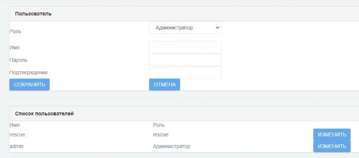
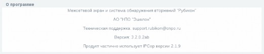
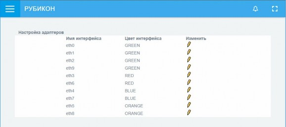
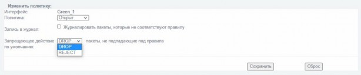
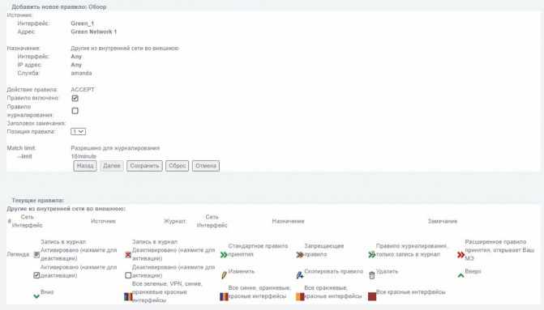
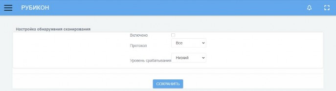
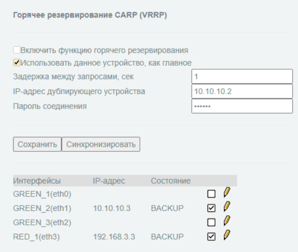
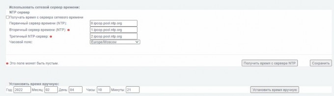
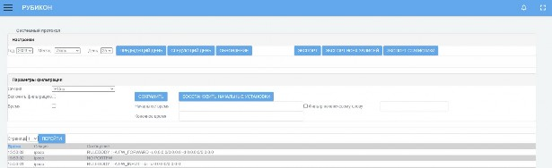
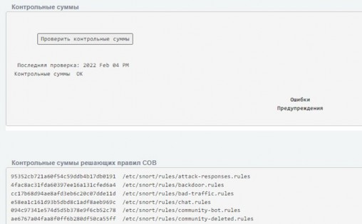

Назначение и область применения
Изделие представляет собой программно-техническое средство, реализующее
функции контроля и фильтрации в соответствии с заданными правилами проходящих
через него информационных потоков, используемое в целях обеспечения защиты
(некриптографическими методами) информации, содержащей сведения,
составляющие государственную тайну, и иной информации ограниченного доступа
и обеспечивающее защиту от преднамеренного несанкционированного доступа
или специальных воздействий на информацию (носители информации) со стороны
внешних нарушителей, действующих из информационно-телекоммуникационных
сетей, в том числе сетей международного информационного обмена, с реализацией
следующих функций безопасности:контроль и фильтрация;
идентификация и аутентификация;
разграничение доступа к управлению изделием;
регистрация событий безопасности (аудит);
обеспечение бесперебойного функционирования и восстановление;
тестирование и контроль целостности;
преобразование сетевых адресов;
маскирование;
приоритизация информационных потоков;
управление (администрирование);
взаимодействие с другими средствами защиты информации;
управление параметрами системы обнаружения вторжений;
управление установкой обновлений (актуализации) базы решающих правил
системы обнаружения вторжений;анализ данных системы обнаружения вторжений;
сбор данных о событиях и активности в контролируемой информационной
системе;реагирование системы обнаружения вторжений.
Функциональные возможности изделия
«Рубикон» реализует следующие основные функциональные возможности:
возможность осуществлять фильтрацию сетевого трафика для отправителей
информации, получателей информации и всех операций передачи, контролируемой«Рубикон» информации к узлам информационной системы и от них;
возможность осуществлять фильтрацию для всех операций перемещения через
межсетевой экран информации к узлам информационной системы и от них;возможность осуществлять фильтрацию, основанную на следующих типах
атрибутов безопасности субъектов и информации:сетевой адрес узла отправителя;
сетевой адрес узла получателя;
сетевой протокол, который используется для взаимодействия;
интерфейс межсетевого экрана (на уровне сетевого адреса), через который
проходит пакет;интерфейс межсетевого экрана (на физическом уровне).
возможность осуществлять фильтрацию, основанную на следующих типах
атрибутов безопасности информации:сетевой протокол, который используется для взаимодействия;
атрибуты, указывающие на фрагментацию пакетов;
транспортный протокол, который используется для взаимодействия;
порты источника и получателя в рамках сеанса (сессии);
разрешенные/запрещенные команды;
разрешенный/запрещенный мобильный код;
параметры команд;
последовательности используемых команд;
разрешенные/запрещенные протоколы прикладного уровня.
возможность явно разрешать информационный поток, базируясь
на устанавливаемом администратором «Рубикон» наборе правил фильтрации,
основанном на идентифицированных атрибутах;возможность запрещать информационный поток, базируясь
на устанавливаемом администратором «Рубикон» наборе правил фильтрации,
основанном на идентифицированных атрибутах;возможность блокирования всех информационных потоков, проходящих через
нефункционирующий или функционирующий некорректно «Рубикон»;возможность осуществлять политику фильтрации пакетов с учетом
управляющих команд от взаимодействующих с «Рубикон» средств защиты информации
других видов;возможность осуществлять проверку каждого пакета по таблице состояний
для определения того, не противоречит ли состояние (статус, тип) пакета ожидаемому
состоянию;возможность осуществлять проверку использования пользователями
отдельных команд, для которых администратором «Рубикон» установлены
разрешительные или запретительные атрибуты безопасности;возможность осуществлять проверку использования пользователями
отдельных команд (последовательностей отдельных команд), для которых
администратором «Рубикон» установлены разрешительные или запретительные
атрибуты безопасности;возможность осуществлять проверку использования сетевых ресурсов,
содержащих мобильный код, для которого администратором «Рубикон» установлены
разрешительные или запретительные атрибуты безопасности;возможность осуществлять проверку использования пользователями
прикладного программного обеспечения (приложений), для которых администратором«Рубикон» установлены разрешительные или запретительные атрибуты безопасности;
возможность разрешать информационный поток, основываясь на результатах
проверок;возможность запрещать информационный поток, основываясь на результатах
проверок;возможность осуществлять фильтрацию пакетов с учетом управляющих
команд от взаимодействующих с «Рубикон» средств защиты информации других видов,
основанную на атрибутах, указывающих на признаки нарушения безопасности
в информации сетевого трафика;возможность разрешать информационный поток, если значения атрибутов
безопасности, установленные взаимодействующими средствами защиты информации
для контролируемого сетевого трафика, указывают на отсутствие нарушений
безопасности информации;возможность запрещать информационный поток, если значения атрибутов
безопасности, установленные взаимодействующими средствами защиты информации
для контролируемого сетевого трафика, указывают на наличие нарушений безопасности
информации;возможность осуществлять фильтрацию при импорте (перехвате) информации
сетевого трафика из-за пределов «Рубикон»;возможность осуществлять передачу информационных потоков
с переназначением сетевых адресов отправителя и (или) получателя (трансляция адресов
и посредничество в передаче), фильтрацию при экспорте (передаче от своего имени)
информации сетевого трафика за пределы межсетевого экрана;возможность экспортировать (передавать от своего имени) информацию
сетевого трафика при положительных результатах фильтрации и других проверок;возможность осуществлять посредничество в передаче информации сетевого
трафика, основанное на типе сетевого трафика;возможность маскирования наличия «Рубикон» способами, затрудняющими
нарушителям его выявление;возможность осуществлять проверку параметров отдельных команд,
для которых администратором «Рубикон» установлены допустимые или недопустимые
значения параметров;возможность осуществлять проверку последовательностей используемых
отдельных команд, для которых администратором «Рубикон» установлены признаки
допустимых и (или) недопустимых последовательностей;возможность регистрации и учета выполнения проверок информации сетевого
трафика;возможность читать информацию из записей аудита уполномоченным
администраторам;возможность выбора совокупности событий, подвергающихся аудиту,
из совокупности событий, в отношении которых возможно осуществление аудита;возможность оповещения уполномоченных лиц о критичных видах событий
безопасности, в том числе – сигнализация о попытках нарушения правил «Рубикон»;возможность выборочного просмотра данных аудита (поиск, сортировка,
упорядочение данных аудита);возможность регистрации возникновения событий, которые в соответствии
с национальным стандартом Российской Федерации ГОСТ Р ИСО/МЭК 15408-2-2013«Информационная технология. Методы и средства обеспечения безопасности. Критерии
оценки безопасности информационных технологий. Часть 2. Функциональные
компоненты безопасности» включены в детализированный уровень аудита;возможность идентификации администратора «Рубикон» до разрешения
любого действия (по администрированию), выполняемого при посредничестве«Рубикон» от имени этого администратора;
возможность аутентификации администратора «Рубикон» до разрешения
любого действия (по администрированию), выполняемого при посредничестве«Рубикон» от имени этого администратора;
возможность осуществления идентификации субъектов межсетевого
взаимодействия до передачи «Рубикон» информационного потока получателю;возможность осуществления аутентификации субъектов межсетевого
взаимодействия до передачи «Рубикон» информационного потока получателю;поддержку определенных ролей по управлению «Рубикон»;
возможность со стороны администраторов управлять режимом выполнения
функций безопасности «Рубикон»;возможность со стороны администраторов управлять данными «Рубикон»,
используемыми функциями безопасности «Рубикон»;возможность со стороны администраторов управлять атрибутами
безопасности;возможность поддержки списка типов сетевого трафика для осуществления
посредничества в передаче, предусматривающего разделение трафика по типам;ассоциацию типов сетевого трафика из списка с конкретным сетевым
трафиком для осуществления посредничества в передаче и обработки соответствующих
типов сетевого трафика прокси-агентами;возможность изменения области значений информации состояния соединения
со стороны администраторов «Рубикон»;возможность присвоения информации состояния соединения допустимых
значений, таких как установление соединения, использование соединения, завершение
соединения и других;возможность ведения для каждого соединения таблицы состояний,
основанной на информации состояния соединения;предоставление возможности администраторам «Рубикон» модифицировать,
удалять разрешительные и (или) запретительные атрибуты безопасности
для используемых пользователями отдельных команд для осуществления «Рубикон»
фильтрации;предоставление возможности администраторам «Рубикон» модифицировать,
удалять разрешительные и (или) запретительные атрибуты безопасности использования
сетевых ресурсов, содержащих отдельные типы мобильного кода, для осуществления«Рубикон» фильтрации;
предоставление возможности администраторам «Рубикон» модифицировать,
удалять атрибуты безопасности, определяющие допустимые и (или) недопустимые
значения параметров используемых отдельных команд, для осуществления «Рубикон»
фильтрации;предоставление возможности администраторам «Рубикон» модифицировать,
удалять атрибуты безопасности, определяющие признаки допустимых
и (или) недопустимых последовательностей используемых отдельных команд,
для осуществления «Рубикон» фильтрации;возможность перехода в режим аварийной поддержки, который предоставляет
возможность возврата «Рубикон» к штатному функционированию;возможность генерации надежных меток времени при проведении аудита
безопасности;возможность тестирования (самотестирования) функций безопасности
«Рубикон» (контроль целостности исполняемого кода «Рубикон»);
возможность сохранения штатного функционирования «Рубикон»
при некритичных типах сбоев;возможность согласованно интерпретировать управляющие команды,
атрибуты сетевого трафика и иные данные, получаемые от взаимодействующих
с «Рубикон» средств защиты информации других видов;поддержку правил интерпретации данных, получаемых
от взаимодействующих с «Рубикон» средств защиты информации других видов;возможность завершения работы или восстановления (для предусмотренных
сценариев сбоев) штатного функционирования «Рубикон»;возможность тестирования средств защиты информации других видов,
взаимодействующих с «Рубикон», и управляющие команды которых использует«Рубикон» для управления потоками информации;
возможность при определенных типах сбоев/прерываний обслуживания
автоматического возврата «Рубикон» к штатному функционированию;возможность кластеризации «Рубикон»;
возможность приоритизации контроля и фильтрации разных информационных
потоков, а также выделения ресурсов, доступных для разных информационных потоков,
обрабатываемых одновременно (в течение определенного периода времени);возможность сбора информации о сетевом трафике;
возможность выполнения анализа собранных данных «Рубикон» о сетевом
трафике в режиме, близком к реальному масштабу времени, и по результатам анализа
фиксировать информацию о дате и времени, результате анализа, идентификаторе
источника данных, протоколе, используемом для проведения вторжения;возможность выполнения анализа собранных данных с целью обнаружения
вторжений с использованием сигнатурного и эвристических методов;возможность выполнения анализа собранных данных с целью обнаружения
вторжений с использованием эвристических методов, основанных на методах выявления
аномалий сетевого трафика на заданном уровне эвристического анализа;возможность обнаружения вторжений на основе анализа служебной
информации протоколов сетевого уровня базовой эталонной модели взаимосвязи
открытых систем;возможность фиксации факта обнаружения вторжений или нарушений
безопасности в журналах аудита;возможность задания правил фильтрации данных «Рубикон» с возможностью
сохранения отфильтрованной информации в отдельных файлах;возможность блокирования вторжений и нарушений безопасности,
в том числе путем выдачи управляющих сигналов «Рубикон»;уведомление администратора «Рубикон» об обнаруженных вторжениях
по отношению к контролируемым узлам ИС и нарушениях безопасности с помощью
отображения соответствующего сообщения на консоли управления, отсылки сообщений
электронной почты;возможность автоматизированного обновления базы решающих правил;
возможность верификации целостности базы решающих правил (далее – БРП)
системы обнаружения вторжений (далее – СОВ);возможность маскирования наличия датчика «Рубикон» в составе
контролируемой информационной системы (далее – ИС), противодействие выявлению
его на сетевом уровне стандартными средствами операционной системы (далее – ОС);возможность со стороны уполномоченных администраторов (ролей) управлять
режимом выполнения функций безопасности «Рубикон»;возможность со стороны уполномоченных администраторов (ролей) управлять
данными «Рубикон» (установление и контроль ограничений и значений; внесения новых
правил контроля в БРП СОВ);поддержку определенных ролей для «Рубикон» и их ассоциацию
с конкретными администраторами и пользователями ИС;возможность локального и удаленного администрирования «Рубикон»;
наличие графического интерфейса администрирования «Рубикон»;
возможность генерации записей аудита для событий, потенциально
подвергаемых аудиту;возможность ассоциации каждого события аудита с идентификатором
субъекта, его инициировавшего;возможность читать информацию из записей аудита;
ограничение доступа к чтению записей аудита;
поиск, сортировку, упорядочение данных аудита.
В состав изделия входят следующие основные компоненты:
аппаратная платформа с опционально предустановленными модулями
расширения;предустановленное программное обеспечение (далее – ПО) «Программное
изделие «Рубикон» НПЕШ.00501-01, обеспечивающее реализацию функциональных
возможностей изделия.
Модель поставляемой в составе изделия аппаратной платформы и перечень
дополнительных модулей расширения определяется вариантом исполнения изделия
и его конфигурацией, в соответствии с Договором поставки. Указанная информация
представлена в формуляре на поставляемое изделие.Состав комплекта поставки «Рубикон», в соответствии с вариантом
исполнения, представлен в формуляре на изделие.В зависимости от варианта исполнения «Рубикон» и договора поставки
дополнительно могут поставляться модули расширения.Требования к АРМ администратора
Для управления интерфейсом администрирования «Рубикон» используется
графический веб-интерфейс, доступ к которому осуществляется с использованием
веб-браузера.Таблица 1 – Минимальные требования к АРМ администратора «Рубикон»
Элемент среды
функционированияПараметры
Вычислительная платформа
АРМ администратора ПО
изделияПроцессор на базе
архитектурыx86-x64/ARM
Оперативная память, Гбайт,
не менее2
Устройства ввода-вывода,
не менеемонитор;
клавиатура;
мышь;
Элемент среды
функционированияПараметры
1хCOM-порт (RS-232)
Поддержка дополнительных
интерфейсов, не менее 1хEthernet 100/1000 Base-T
ОС АРМ администратора
ОС семейства Linux/Unix
32/64 бит(Орел) не ниже ver. 1.11;
(Смоленск) не ниже ver. 1.5
ОС семейства Microsoft
Windows 64 битВеб-браузер
ОС семейства Linux/Unix
32/64 бит, не ниже Firefox (ver. 60.0.2, x64)
ОС семейства Microsoft
Windows 64 бит, не ниже IE (ver. 11.1.17134.0);
Debian не ниже ver. 8;
Ubuntu не ниже ver. 16;
Astra Linux Common Edition
Astra Linux Special Edition
Windows Server 2019;
Windows 10
Microsoft Edge
(ver. 42.17134.1.0);Firefox (ver. 76.0.1 x64);
Chrome (ver. 83.0.4103.61)
Состав установочного дистрибутива ПО
Установочный дистрибутив представляет собой образ ПО изделия на носителе
данных.Контрольная сумма ПО изделия представлена в формулярах
на соответствующее исполнение изделия.Состав и контрольные суммы неизменяемых исполняемых файлов
ПО изделия после установки на аппаратную платформу должны соответствовать
контрольным суммам, приведенным в документе «Технические условия.
Приложение В» НПЕШ.465614.002ТУ1, находящемся на электронном носителе
с документацией из комплекта поставки.Подсчет контрольных сумм файлов производится с помощью
программного изделия «Программное обеспечение «Программа инспекционного
контроля «ПИК Эшелон» (сертификат № 3752 выдан Министерством обороны
Российской Федерации, по алгоритму «ФИКС (Уровень-1)»). Также подсчет
контрольных сумм файлов может производиться с использованием программного
компонента «Инспектор», входящего в состав изделия «Комплекс программного
обеспечения «Сканер-ВС» и компонент «Инспектор» НПЕШ.00606-01.02
(сертификат № 3873 выдан Министерством обороны Российской Федерации,
удостоверяет соответствие реальных и декларируемых в документации
функциональных возможностей).Функциональная структура ПО изделия представлена следующими
подсистемами:подсистема обеспечения сетевого взаимодействия;
подсистема идентификации / аутентификации;
подсистема бесперебойного функционирования и восстановления;
подсистема регистрации событий;
подсистема взаимодействия с внешними системами;
подсистема управления;
подсистема обнаружения вторжений;
веб-интерфейс;
операционная система;
подсистема BIOS.
Подсистема обеспечения сетевого взаимодействия
Подсистема обеспечения сетевого взаимодействия представлена следующими
модулями:модуль фильтрации;
модуль маршрутизации;
модуль преобразования адресов;
модуль приоритизации;
модуль управления состояниями;
модуль сетевого посредника;
модуль настройки сетевых интерфейсов.
Модуль фильтрации является ядром подсистемы обеспечения сетевого
взаимодействия и используется для работы модуля управления состоянием, модуля
тестирования и контроля целостности и модуля сетевого посредника.Модуль фильтрации осуществляет фильтрацию информационных потоков,
основанную на следующих типах атрибутов безопасности:сетевой адрес узла отправителя и получателя;
логический или физический сетевой интерфейс «Рубикон», через который
проходит пакет;сетевой протокол, который используется для взаимодействия;
направление пакета (входящий/исходящий);
транспортный протокол, который используется для взаимодействия;
порты источника и получателя в рамках сеанса (сессии);
флаг фрагментации;
мандатная метка;
команды (разрешенные/запрещенные), параметры команд; последовательности
используемых команд - для FTP протокола;мобильный код (разрешенный/запрещенный) для языка программирования
JavaScript;прикладное ПО (разрешенное/запрещенное) для веб-браузеров (Internet
Explorer, Mozilla Firefox, Google Chrome и др.).
Программный модуль «Рубикон» предназначен для выполнения статической
маршрутизации.Программный модуль «Рубикон», позволяющий проводить трансляцию
сетевых адресов (NAT) при экспорте информации сетевого трафика за пределы«Рубикон» и осуществлять замену сетевого адреса «Рубикон» на маскирующий
(подставной) адрес.Программный модуль «Рубикон», обеспечивающий приоритизацию
информационных потоков на основе установленных приоритетов значений сетевого
адреса и используемого порта.Программный модуль «Рубикон» предназначен для проверки каждого пакета
по таблице состояний для определения того, не противоречит ли состояние пакета
ожидаемому состоянию.Программный модуль «Рубикон», осуществляющий посредничество в передаче
информации сетевого трафика, основанное на следующих типах атрибутов
безопасности:сетевой адрес и порт отправителя и получателя;
сетевой трафик (FTP, HTTP);
разрешенные/ запрещенные атрибуты информации в заголовках пакетов.
Модуль настройки сетевых интерфейсов
Программный модуль «Рубикон», осуществляет маскирование датчика СОВ
на сетевом уровне и позволяет настраивать сетевые интерфейсы.
Подсистема идентификации / аутентификации
Подсистема идентификации / аутентификации представлена модулем
аутентификации веб-сервера.Модуль аутентификации веб-сервера
Модуль аутентификации веб-сервера обеспечивает идентификацию
и аутентификацию администраторов «Рубикон», а также идентификацию
и аутентификацию субъектов межсетевого взаимодействия до передачи межсетевым
экраном информационного потока получателю.
представлена следующими модулями:
модуль тестирования и контроля целостности;
модуль восстановления;
модуль кластеризации.
Модуль тестирования и контроля целостности
Программный модуль «Рубикон», обеспечивающий контроль целостности
исполняемых файлов «Рубикон» путем контрольного суммирования, а также
проверку работоспособности служб «Рубикон» и сетевого соединения.Программный модуль «Рубикон», обеспечивающий автоматическое
восстановление устойчивых и безопасных состояний HTTP-сервера, прокси сервера,
VPN-сервера, сервиса аудита, службы времени, службы СОВ и DHCP.Программный модуль «Рубикон» обеспечивает выполнение всех возможностей
межсетевого экрана (далее – МЭ) при возникновении сбоев путем кластеризации.Кластеризация предполагает резервирование двух изделий «Рубикон» в режиме
«активный – пассивный».
Подсистема регистрации событий
Данная подсистема представлена модулем работы с журналом.
Программный модуль «Рубикон», предназначенный для создания, хранения
и просмотра записей аудита. «Рубикон» поддерживает уровни доступа (роли)
пользователей. Все действия пользователей отслеживаются и соответствующие
записи помещаются в файлы регистрации событий безопасности. Модуль работы
с журналом предоставляет уполномоченным пользователям (администратор«Рубикон», аудитор «Рубикон») возможность читать всю информацию из записей
аудита, осуществлять поиск, сортировать записи аудита.
Подсистема взаимодействия с внешними системами
Данная подсистема состоит из следующих модулей:модуль взаимодействия с внешними средствами защиты информации
(далее – СЗИ);модуль связи с сервером журналирования.
Модуль взаимодействия с внешними СЗИ
Программный модуль «Рубикон», обеспечивающий взаимодействия «Рубикон»
со средствами антивирусной защиты (далее – САВЗ) по протоколу адаптации
Интернет-контента (ICAP).Модуль связи с сервером журналирования
Программный модуль «Рубикон», обеспечивающий взаимодействие с сервером
журналирования.
Данная подсистема представлена следующими модулями:
модуль веб-сервера;
модуль преобразования конфигурации браузера.
Программный модуль «Рубикон», обеспечивающий выполнение запросов
пользователей.Модуль преобразования конфигурации браузера
Программный модуль «Рубикон», обеспечивающий представление
информации для пользователей.
Подсистема обнаружения вторжений
Подсистема обнаружения вторжений представлена следующими модулями:
модуль «Агент обновления»;
модуль сигнатурного анализа сетевого трафика;
модуль эвристического анализа сетевого трафика;
модуль реагирования.
Программный модуль «Рубикон», предназначенный для получения актуальной
базы решающих правил СОВ с сервера обновлений.Модуль сигнатурного анализа сетевого трафика
Программный модуль «Рубикон», предназначенный для поиска определенных
в базе решающих правил СОВ сигнатур атак в сетевых пакетах.Модуль эвристического анализа сетевого трафика
Программный модуль «Рубикон», предназначенный для обнаружения
вторжений с помощью эвристического анализа.Программный модуль «Рубикон», позволяющий уведомлять администратора
об обнаруженных вторжениях и выдавать управляющие сигналы МЭ.
Веб-интерфейс реализует интерфейс модуля «Программа управления»,
позволяет решать задачи по администрированию СОВ.Операционная система, помимо реализации профильных функций
по умолчанию, дополнительно представлена следующими модулями:модуль выдачи меток времени;
модуль захвата и разбора трафика.
Программный модуль «Рубикон», предоставляющий надежные метки времени
для собственного использования (при генерации записей в журнале аудита).Модуль захвата и разбора трафика
Программный модуль «Рубикон», предназначенный для захвата, буферизации
и управления последовательностью обработки сетевых пакетов.
Подсистема BIOS представлена модулем BIOS.
Программный модуль, обеспечивающий инициализацию работы аппаратной
платформы и передачу управления загрузчику ПО изделия.
Приемка изделия осуществляется в следующем порядке:
проверка комплектности;
проверка маркировки и пломбирования;
проверка контрольных сумм изделия.
Проверку комплектности следует проводить методом оценки соответствия
комплекта изделия и разделом «Комплектность» формуляра на изделие, если
в Договоре поставки не указано иное.Проверка маркировки и пломбирования
Проверку маркировки и пломбирования следует проводить методом оценки
соответствия маркировки и пломбирования изделия и подразделами «Маркировка»
и «Пломбирование» руководства по эксплуатации на изделие.Проверка контрольных сумм изделия
Проверка контрольных сумм дистрибутива проводится в соответствии с п. 1.3.3
настоящего документа.
Требования по безопасной установке и настройке изделия
Требования к квалификации администратора
Администратор должен обладать высоким уровнем квалификации
и практическим опытом выполнения работ по установке, настройке
и администрированию изделия, а также должен иметь профессиональные знания
и практический опыт в области системного администрирования. Обязательны
знакомство и практический опыт установки и администрирования серверных
операционных систем семейства MS Windows и Linux, знание эксплуатационной
документации изделия.Организационные меры по обеспечению безопасной настройки
и установкиПри эксплуатации «Рубикон» в составе объектов информатизации, на которых
производится обработка информации ограниченного доступа, должно быть
обеспечено выполнение следующих организационных мер:наличие администратора безопасности, отвечающего за корректную
эксплуатацию «Рубикон»;сохранение в защищенной форме идентификаторов (имен) и паролей (кодов)
администратора «Рубикон»;обеспечение физической сохранности технических средств (устройства
«Рубикон», терминала или персональной электронно-вычислительной машины
(далее – ЭВМ), использующейся в качестве терминала) и исключение возможности
доступа к ним посторонних лиц;обеспечение защиты АРМ администратора «Рубикон», в том числе,
от деструктивного воздействия вредоносного ПО;регламентацию использования дополнительного ПО, установленного на АРМ
администратора «Рубикон»;обеспечение сохранности оборудования и физической целостности системных
блоков компьютеров;ведение журнала учета работы компьютеров, проведения регламентных
мероприятий и внесения изменений в конфигурацию технических и программных
средств;реализация мероприятий по антивирусной защите и обеспечение свободной
от вирусов программной среды компьютеров.
К информационной среде, в которой функционирует «Рубикон»,
предъявляются следующие требования безопасности:обеспечение регламентации запрета доступа непривилегированных
пользователей из внешней сети в защищаемые сети по всем типам протоколов,
за исключением специально созданной для такого доступа демилитаризованной сети;обеспечение физической сохранности технических средств (МЭ, средства
вычислительной техники, на котором он функционирует и терминалов, с которых
выполняется его управление) и исключение возможности доступа к ним посторонних лиц;обеспечение установки, конфигурирования и управления «Рубикон»
в соответствии с эксплуатационной документацией.
Перечень используемой эксплуатационной документации
Перечень эксплуатационных документов, с которым необходимо ознакомиться
перед началом работы с изделием:настоящий документ НПЕШ.465614.002РА «Программно-аппаратный комплекс
«Комплекс противодействия программно-аппаратным воздействиям (КП ПАВ)
«Рубикон» с поддержкой виртуальных сетей. Руководство администратора»;
документ НПЕШ.465614.002РП «Программно-аппаратный комплекс
«Комплекс противодействия программно-аппаратным воздействиям (КП ПАВ)
«Рубикон» с поддержкой виртуальных сетей. Руководство пользователя»;
руководство по эксплуатации на изделие (в соответствии с вариантом
исполнения изделия);формуляр на изделие (в соответствии с вариантом исполнения изделия).
Первый запуск устройства «Рубикон»
Первый запуск устройства «Рубикон» производится в следующем порядке:
последовательно выполнить действия, указанные в подразделе «Подготовка
изделия к использованию» руководства по эксплуатации на изделие;последовательно выполнить действия, указанные в подразделе «Подключение
изделия» руководства по эксплуатации на изделие;последовательно выполнить действия, указанные в подразделе «Включение
изделия» руководства по эксплуатации на изделие;Примечание – Для авторизации, как администратор, необходимо ввести логин и пароль.
По умолчанию логин – admin. Пароль – radmin. В случае выполнения трех неуспешных попыток
ввода логина и пароля – доступ к «Рубикон» будет заблокирован. Спустя 5 минут можно повторить
попытку входа.при первом подключении к административному интерфейсу, для обеспечения
безопасности, пароль по умолчанию необходимо изменить на странице«Система – Пользователи» в главном меню веб-интерфейса изделия;
после выполнения указанных выше шагов пользователь с полномочиями
администратора безопасности будет перенаправлен в раздел «Система», подраздел
«Начало» (стартовая страница).
Настройка функций безопасности
Настройка функций безопасности устройства «Рубикон» осуществляется
администратором безопасности охраняемого IT-сегмента в соответствии с Политикой
информационной безопасности.Установка устройства «Рубикон»
По окончании настройки функций безопасности устройство «Рубикон» должно
быть установлено и подключено согласно монтажным схемам и схемам подключения
защищаемой информационной системы.Проверка целостности установленного ПО
Перед началом эксплуатации необходимо выполнить проверку контрольных
сумм установленного ПО изделия.В изделии предусмотрена возможность верификации целостности
исполняемых файлов и файлов конфигурации администратором после успешного
прохождения им процедуры авторизации.Контроль целостности исполняемых файлов и файлов конфигурации
проверяется с периодичностью 1 час и по запросу администратора.Проверка работоспособности считается выполненной при успешном
выполнении процедур первого запуска и корректных результатах проверки
контрольных сумм ПО изделия, установленном на аппаратной платформе «Рубикон».
Подробно процедуры первого запуска и проверки работоспособности
представлены в руководстве по эксплуатации изделия в разделе «Использованиепо назначению».
ПО изделия поддерживает присвоение пользователям следующих ролей:
«Администратор» – имеет доступ к просмотру веб-интерфейса и настройке
«Рубикон»;
«Аудитор» – имеет доступ к разделам «Состояние» и «Журналы»,
без возможности внесения изменений в настройки «Рубикон»;«Пользователь» – не имеет доступа к просмотру веб-интерфейса
(кроме стартовой страницы) и страницы установки соединения
«https://<ip-address>:8443/cgi-bin/connect.cgi». Параметр «ip-address» при первоначальной
установке имеет значение 192.168.1.1 и может быть изменен администратором.
На странице установки соединения после нажатия кнопки «Установить соединение»
ПО изделия фиксирует IP-адрес пользователя и предоставляет соответствующие права,
назначенные данному пользователю администратором в разделе «Межсетевой экран»
подраздела «Правила межсетевого экрана».Для того, чтобы добавить новых пользователей в подразделе «Пользователи»
раздела «Система», в ниспадающем списке «Роль» выберите роль («Администратор»,«Аудитор», «Пользователь»), затем заполните следующие текстовые поля
(см. рис. 1):«Имя»;
«Пароль»;
«Подтверждение».
Далее следует нажать кнопку «Сохранить».
Подраздел «Пользователи» раздела «Система»

Список пользователей отображается в блоке «Список пользователей».
При необходимости, можно удалить пользователя или внести изменения в учетную
запись.Авторизация роли «Аудитор» и роли «Пользователь» выполняется аналогично
авторизации роли «Администратор». Для работы с «Рубикон» пользователю
необходимо получить логин и пароль у администратора безопасности.Просмотр сведений о программе
Подраздел «О программе» раздела «Система»

Для настройки МЭ войдите в раздел «Межсетевой Экран» и перейдите
в подраздел «Настройки межсетевого экрана».Подраздел «Настройки межсетевого экрана» предназначен для установки
параметров администрирования МЭ. Общая настройка межсетевого экрана
заключается в настройке административного доступа к межсетевому экрану, выборе
режимов его работы, а также в установке политик по умолчанию на интерфейсах.Цвет интерфейса – это набор стандартных правил и политик по отношению
к пакетам, которые проходят через него. Цветовые политики позволяют избежать
создания большого числа различных правил и сразу применить наиболее
подходящую политику, которую в дальнейшем возможно доработать под конкретное
применение настройкой правил МЭ.Цветовые политики – определяют «поведения» правил МЭ при сетевом
взаимодействии с данным сетевым интерфейсом и между сетевыми интерфейсами.Пользовательские правила МЭ имеют более высокий приоритет, чем цветовые
политики и могут их превосходить.Сетевые интерфейсы можно разбить на две группы:
физические – определяются исходя из наличия физических сетевых адаптеров;
виртуальные – назначаются на физических интерфейсах или объединяют
их в виртуальные интерфейсы.
Цветовые политики для физических интерфейсов представлены
в таблице 2.Таблица 2 – Цветовые политики для физических интерфейсов
Цвет интерфейса
Описание соответствующих правил и политик
Green (Зеленый)
Интерфейс используется для подключения к внутренней (доверенной)
сетиRed (Красный)
Интерфейс используется для подключения к внешней сети, при этом
на сетевом интерфейсе включается трансляция сетевых адресов (NAT)
(потенциально опасная сеть)Orange (Оранжевый)
Интерфейс для создания демилитаризованной зоны (далее – DMZ)
Цвет интерфейса
Описание соответствующих правил и политик
Blue (Синий)
Интерфейс, для подключения к локальной сети, узлы которой по
умолчанию имеют возможность свободного прохождения в сеть
красного интерфейса аналогично узлам в сети зеленого интерфейса,
но имеют ограничения на доступ к узлам зеленых интерфейсов с
помощью белого списка.Разрешения на доступ к узлам зеленых интерфейсов настраиваются на
странице «Межсетевой экран» → «Доступ к синему интерфейсу»По умолчанию цветовая политика на физических интерфейсах назначается
зеленая. Такие интерфейсы являются административными, т.е. по ним разрешено
администрирование «Рубикон» (см. рис. 3).Цветовая политика на физических интерфейсах по умолчанию
Чтобы назначить / изменить цветовую политику интерфейса, нужно перейти
в подраздел «Настройка адаптеров» раздела «Сеть» (см. рис. 4 – 5).Подраздел «Настройка адаптеров»

Отображение цветовых политик интерфейсов
Перед сменой цвета необходимо убедиться, что интерфейс не является(на странице «Межсетевой экран» → «Настройки межсетевого
экрана»). Система не позволит изменить цвет зеленого административногоВНИМАНИЕ!
СМЕНА ЦВЕТА ИНТЕРФЕЙСА ВСТУПАЕТ В СИЛУ ТОЛЬКО ПОСЛЕ
ПЕРЕЗАГРУЗКИ.Цветовые политики для виртуальных интерфейсов представлены
на рис. 6 – 7.Виртуальным интерфейсам не назначаются цветовые политики,
за исключением OpenVPN. Правила цветовой политики МЭ для OpenVPN
аналогичны зеленой цветовой политики.Цветовые политики для виртуальных интерфейсов
Правила цветовых политик для виртуальных интерфейсов
Для отслеживания состояний соединений различных интерфейсов используется
отдельная цветовая легенда, которую можно увидеть на странице«Состояние» → «Соединения» (см. рис. 8).
Цветовая легенда состояний соединений различных интерфейсов
Описание цветовой легенды состояний соединений различных интерфейсов
представлена в таблице 3.Таблица 3 – Описание цветовой легенды состояний соединений
Цвет
Значение
Описание
Зеленый
ЛВС
Сетевые пакеты от/к сети с зеленой цветовой
политикойКрасный
Интернет
Сетевые пакеты от/к сети с красной цветовой
политикойГолубой
Беспроводная сеть
Сетевые пакеты от/к сети с синей цветовой
политикойОранжевый
DMZ
Сетевые пакеты от/к сети с оранжевой цветовой
политикойСиний
IPCop
Сетевые пакеты от/к Рубикон
Насыщено фиолетовый
IPSec
Сетевые пакеты от/к сети IPSec
Светло фиолетовый
OpenVPN
Сетевые пакеты от/к сети OpenVPN
Бесцветный
–
Все остальные сетевые пакеты
Подраздел «Настройки межсетевого экрана» состоит из следующих блоков:
«Настройки»;
«Политики сетевых интерфейсов».
Блок «Настройки» (см. рис. 9) предназначен для ввода настроек МЭ.
Блок «Настройки»
Блок «Настройки межсетевого экрана» содержит элементы, указанные
в таблице 4.Таблица 4 – Описание элементов блока «Настройки»
Элемент
Описание
Поле для ввода необходимой информации
Поле с проставленным флажком (параметр включен)
Пустое поле для проставления флажка (параметр выключен)
Если это не ваш MAC, вы получите административный
доступ к устройству «Рубикон», только когда создадите
правило доступа к устройству «Рубикон» для своего
собственногоПараметр «Green_1»
Сетевой интерфейс являющийся административным.
По умолчанию все пакеты, маршрутизируемые между
различными зелеными интерфейсами, не блокируютсяПараметр «Дополнительное
ограничение по MAC-адресу»Включение MAC-адреса компьютера, с которого возможно
администрирование МЭ.После установки данного параметра администрирование с
других MAC-адресов будет невозможноПоле «Дополнительное
ограничение по MAC-адресу»Предназначено для указания MAC-адреса компьютера, с
которого возможно администрирование МЭ.После установки данного параметра администрирование с
других MAC-адресов будет невозможноПараметр «Запретить все
фрагментированные пакеты»При активации параметра сетевые пакеты с флагом
фрагментации в IP-заголовке будут заблокированыПараметр «Расширенный режим»
Предназначен для активации расширенного режима
настроек МЭПараметр «Настройки GUI»
Предназначен для включения цветной индикации
интерфейсов при просмотре правил МЭПараметр
«Правило NEW not SYN»
Включение блокировки SYN-пакетов по протоколу TCP, для
которых не было установлено соединениеКнопка сохранения введенных данных
Кнопка удаления введенных данных
Блок «Политики сетевых интерфейсов»
Блок «Политики сетевых интерфейсов» (см. рис. 10) содержит перечень
политик сетевых интерфейсов.Блок «Политики сетевых интерфейсов»
Блок «Политики сетевых интерфейсов» содержит перечень политик сетевых
интерфейсов, распределенных по следующим параметрам:«Имя»;
«Цвет»;
«Политика;
«Запись в журнал»;
«Запрещающее действие по умолчанию»;
«Доступ к Синему интерфейсу».
Блок «Политики сетевых интерфейсов» содержит элементы, указанные
в таблице 5.Таблица 5 – Описание элементов блока «Политики сетевых интерфейсов»
Элемент
Описание
Чекбокс « »
Чекбокс включения/отключения записи в журнал
Кнопка «»
Кнопка редактирования политики
Для изменения политики нажмите на кнопку «
 » в столбце «Действие»
» в столбце «Действие»
редактируемой политики. После этого вы перейдете в меню редактирования
политики (см. рис. 11).Меню редактирования политики
Вы можете изменить тип политики, применяемой к редактируемому
интерфейсу, в раскрывающемся меню из трех вариантов:открыт (open);
полуоткрыт (half-open);
закрыт (closed).
Описание правил, создаваемых по умолчанию при применении каждой
из политик представлено в таблице 6.Таблица 6 – Описание сетевых политик
Тип правила
Политика
Закрыт
Полуоткрыт
Открыт
Входящее
Все соединения
запрещеныDNS, DHCP, NTP,
ICMP, Proxy
DNS, DHCP, NTP,
ICMP, Proxy
Перенаправление
Разрешен доступ в
сетьРазрешен доступ в
сетьРазрешен доступ в
сеть и из сетиИсходящее
Доступ разрешен
Доступ разрешен
Доступ разрешен
Описание политики фильтрации для разных типов интерфейсов представлено
в таблице 7.В таблице 7, приведено соответствие решений о фильтрации трафика между
интерфейсами и «Рубикон» в зависимости от настроенной политики
и типа правила, необходимого для разрешения (или запрещения) трафика.Таблица 7 – Правила МЭ для разных цветовых политик
Направление сетевого пакета
Политика
Правило МЭ
Зеленая сеть → Доступ к Рубикон
open
Разрешен
Зеленая сеть → Доступ к Рубикон
half-open
Разрешен для определенных сервисов
Зеленая сеть → Красная сеть
open
Разрешен
Зеленая сеть → Красная сеть
half-open
Запрещено, для доступа необходимо
создать правило МЭЗеленая сеть → Оранжевая сеть
open
Разрешен
Зеленая сеть → Оранжевая сеть
half-open
Запрещено, для доступа необходимо
создать правило МЭЗеленая сеть → Синяя сеть
open
Разрешен
Зеленая сеть → Синяя сеть
half-open
Запрещено, для доступа необходимо
создать правило МЭЗеленая сеть → Зеленая сеть
open
Разрешен
Зеленая сеть → Доступ к Рубикон
close
Запрещено, для доступа необходимо
создать правило МЭ доступ к РубиконЗеленая сеть → Красная сеть
close
Запрещено, для доступа необходимо
создать правило МЭ из внутренней сети
во внешнеюЗеленая сеть → Оранжевая сеть
close
Запрещено, для доступа необходимо
создать правило МЭ из внутренней сети
во внешнеюЗеленая сеть → Синяя сеть
close
Запрещено, для доступа необходимо
создать правило МЭ из внутренней сети
во внешнеюЗеленая сеть → Зеленая сеть
close
Запрещено, для доступа необходимо
создать правило МЭ из внутренней сети
во внешнеюКрасная сеть → Доступ к Рубикон
close
Запрещено, для доступа необходимо
создать правило МЭ доступ к РубиконКрасная сеть → Зеленая сеть
close
Запрещено, для доступа необходимо
создать правило МЭ перенаправление
портовКрасная сеть → Оранжевая сеть
close
Запрещено, для доступа необходимо
создать правило МЭ перенаправление
портовКрасная сеть → Синяя сеть
close
Запрещено, для доступа необходимо
создать правило МЭ перенаправление
портовСиняя сеть → Доступ к Рубикон
open
Разрешен
Синяя сеть → Доступ к Рубикон
half-open
Разрешен для определенных сервисов
Синяя сеть → Зеленая сеть
open
Запрещено, для доступа необходимо
создать правило МЭ из внутренней сети
во внешнеюНаправление сетевого пакета
Политика
Правило МЭ
Синяя сеть → Зеленая сеть
half-open
Запрещено, для доступа необходимо
создать правило МЭСиняя сеть → Красная сеть
open
Разрешен
Синяя сеть → Красная сеть
half-open
Запрещено, для доступа необходимо
создать правило МЭСиняя сеть → Оранжевая сеть
open
Разрешен
Синяя сеть → Оранжевая сеть
half-open
Запрещено, для доступа необходимо
создать правило МЭСиняя сеть → Доступ к Рубикон
close
Запрещено, для доступа необходимо
создать правило МЭ доступ к РубиконСиняя сеть → Зеленая сеть
close
Запрещено, для доступа необходимо
создать правило МЭ из внутренней сети
во внешнеюСиняя сеть → Красная сеть
close
Запрещено, для доступа необходимо
создать правило МЭ из внутренней сети
во внешнеюСиняя сеть → Оранжевая сеть
close
Запрещено, для доступа необходимо
создать правило МЭ из внутренней сети
во внешнеюОранжевая сеть → Доступ к Рубикон
open
Запрещено, для доступа необходимо
создать правило МЭ доступ к РубиконОранжевая сеть → Зеленая сеть
open
Запрещено, для доступа необходимо
создать правило МЭ из внутренней сети
во внешнеюОранжевая сеть → Красная сеть
open
Разрешен
Оранжевая сеть → Синяя сеть
open
Запрещено, для доступа необходимо
создать правило МЭ из внутренней сети
во внешнеюОранжевая сеть → Доступ к Рубикон
close
Запрещено, для доступа необходимо
создать правило МЭ доступ к РубиконОранжевая сеть → Зеленая сеть
close
Запрещено, для доступа необходимо
создать правило МЭ из внутренней сети
во внешнеюОранжевая сеть → Красная сеть
close
Запрещено, для доступа необходимо
создать правило МЭ из внутренней сети
во внешнеюОранжевая сеть → Синяя сеть
close
Запрещено, для доступа необходимо
создать правило МЭ из внутренней сетиво внешнею
Для включения записи в журнале о пакетах, не соответствующих правилу,
поставьте «галочку» в чекбокс и нажмите кнопку «» (см. рис. 12).
После этого для выбранного интерфейса отобразится чекбокс « ».
».Включение записи в журнале о пакетах, не соответствующих правилу
Запрещающее действие по умолчанию

DROP отклоняет пакет без уведомления. REJECT отклоняет пакет и отправляет
ICMP сообщение «порт недоступен» отправителю.
Для установки ограничения скорости для входящих и исходящих соединений
необходимо выполнить следующие действия:перейти в подраздел «Ограничение трафика» раздела «Службы»
(см. рис. 14);Подраздел «Ограничение трафика» раздела «Службы»
в блоке «Настройки» выбрать имя интерфейса в выпадающем списке;
заполнить текстовое поле «Скорость исходящих соединений (кбит/сек)»;
заполнить текстовое поле «Скорость входящих соединений (кбит/сек)»;
нажать кнопку «Сохранить».
Для настройки приоритизации трафика необходимо настроить приоритеты
трафика выполнив следующие действия:Блок «Настройка приоритизации трафика»
Рис. 15
выбрать имя необходимого интерфейса в выпадающем списке;
выбрать «Приоритет» в выпадающем списке – высокий, средний или низкий;
заполнить текстовое поле «Адрес»;
заполнить текстовое поле «Служба»;
выбрать в выпадающем списке протокол «TCP» или «UDP»;
нажать кнопку «Сохранить».
Для создания нового сетевого моста необходимо выполнить следующие
действия:перейти в подраздел «Мосты» раздела «Сеть» (см. рис. 16);
Подраздел «Мосты» раздела «Сеть»
создайте новый мост, нажав кнопку «Добавить мост» и введите произвольное
имя моста;задайте необходимые значения в полях «Сеть», «Маска сети» и «Адрес»;
укажите связываемые мостом интерфейсы, активировав соответствующие
чекбоксы справа от имен доступных для выбора интерфейсов;для завершения настройки нажмите кнопку «Добавить».
Созданный мост отобразится в информационной таблице «Список мостов»
(см. рис. 17).Отображение добавленного моста в информационной таблице «Список мостов»
Настройка дополнительного адреса сети (настройка псевдонима)
Для настройки дополнительного адреса сети (настройки псевдонима)
необходимо выполнить следующие действия:перейти в подраздел «Адреса» раздела «Межсетевой экран»;
в поле «Имя» ввести информацию, которая будет представлять данный адрес
в правилах межсетевого экрана;выбрать формат адреса IP из выпадающего списка (выбор MAC необходим
для указания одиночного MAC-адреса сетевого устройства);ввести необходимый адрес в поле «Адрес» (например, 11.0.0.0);
ввести маску сети в поле «Маска сети» (например, 255.255.255.0);
применить введенные параметры с помощью кнопки «Добавить».
Введенная сеть будет отображена в информационной таблице
«Дополнительные адреса» (см. рис. 18).
Отображение введенной сети в информационной таблице «Дополнительные адреса»

Добавление сети в группу адресов сетевых интерфейсов
Для настройки объединения в группу сети и адресов сетевых интерфейсов
необходимо выполнить следующие действия:перейти в подраздел «Группы адресов» раздела «Межсетевой экран»;
заполнить поле «Имя группы адресов» для присвоения символьного
обозначения группе (данное имя будет использоваться в правилах фильтрации);активировать чекбокс «Сети по умолчанию» и в выпадающем списке «Сети
по умолчанию» выбрать необходимую для объединения сеть;для применения настройки нажать кнопку «Добавить»;
далее необходимо активировать чекбокс «Имя группы адресов» и выбрать
уже внесенное ранее имя группы адресов в выпадающем списке «Имя группы адресов»;активировать чекбокс «Дополнительные адреса»;
в выпадающем списке «Дополнительные адреса» выбрать нужную сеть;
для завершения настройки нажмите кнопку «Добавить».
Настроенная группа будет отображена в информационной таблице «Группы
адресов» (см. рис. 19).Отображение настроенной группы в информационной таблице «Группы адресов»
Для настройки фильтрации пакетов необходимо выполнить следующие
действия:предварительно настройте необходимые сетевые интерфейсы;
перейти в подраздел «Настройки межсетевого экрана» раздела «Межсетевой
экран»;активировать чекбокс «Включено» для функции «Расширенный режим»
и нажать кнопку «Сохранить»;перейти в подраздел «Службы» раздела «Межсетевой экран»,
(см. рис. 20) где при необходимости можно создать новую службу или выбрать
службу по умолчанию;Подраздел «Службы» раздела «Межсетевой экран»
для добавления новой службы необходимо в текстовом поле «Имя службы»
задать имя новой службы;в текстовом поле «Порты» указать номер порта и инвертировать
при необходимости (функция активируется чекбоксом «Инвертировать»);в выпадающем списке «Протокол» выбрать протокол, который будет
использоваться (инвертировать при необходимости);в выпадающем списке «Тип ICMP» выбрать тип ICMP;
нажать кнопку «Добавить»;
для дальнейшей настройки правил фильтрации перейти в подраздел «Правила
межсетевого экрана» раздела «Межсетевой экран» (см. рис. 21); в данном разделе
отображаются актуальные правила. Актуальные правила возможно изменять,
копировать, удалять, перемещать, активировать и деактивировать. Легенда указана внизу
подраздела;Подраздел «Правила межсетевого экрана» раздела «Межсетевой экран»
для настройки нового правила фильтрации необходимо нажать кнопку
«Другие из внутренней сети во внешнюю» для открытия одноименной страницы;
создать правило, заполнив необходимые поля;
перед тем, как сохранить и применить новое правило, нажать кнопку «Далее»
для предварительного просмотра (см. рис. 22). На данной странице есть
возможность сбросить настройки и перейти на предыдущую страницу, нажав
кнопку «Сброс», или уйти со страницы без сохранения изменений, нажав кнопку«Отмена»;
откорректировать введенные параметры для правила при необходимости;
нажать кнопку «Сохранить» для сохранения параметров и включения нового
правила.
Предварительный просмотр правила

Настройка фильтрации по сетевому адресу отправителя
Для настройки фильтрации по сетевому адресу отправителя необходимо
выполнить следующие действия:перейти на странице «Другие из внутренней сети во внешнюю» на вкладку
«Источник» (подраздел «Настройки межсетевого экрана» раздела «Межсетевой экран»);
активировать чекбокс «Формат адреса» и в одноименном выпадающем списке
выбрать значение «IP»;в текстовом поле «Адрес источника (MAC или IP или сеть)» ввести IP-адрес
отправителя.
Настройка фильтрации по сетевому адресу получателя
Для настройки фильтрации по сетевому адресу получателя необходимо
выполнить следующие действия:перейти на странице «Другие из внутренней сети во внешнюю» на вкладку
«Назначение» (подраздел «Настройки межсетевого экрана» раздела «Межсетевой
экран»);активировать чекбокс «IP или сеть назначения» и в одноименном текстовом
поле ввести IP-адрес получателя;для применения правила для всех служб выключите чекбокс «Использовать
службу»;для применения правила для конкретной службы выберите ее из выпадающего
списка «Сервисы по умолчанию»;для проверки правила нажмите кнопку «Далее» или нажмите
кнопку «Сохранить» для сохранения созданного правила без его проверки.
Настройка фильтрации по сетевому протоколу, который используется
для взаимодействияДля настройки фильтрации по сетевому протоколу, который используется
для взаимодействия необходимо выполнить следующие действия:перейти на странице «Другие из внутренней сети во внешнюю» на вкладку
«Назначение» (подраздел «Настройки межсетевого экрана» раздела «Межсетевой
экран»);активируйте чекбокс «Использовать службу»;
активируйте чекбокс «Свои сервисы» или «Сервисы по умолчанию»
в зависимости от того, какую службу вы собираетесь выбрать;
Настройка вкладки «Назначение»
Настройка фильтрации по направлению пакета
Для настройки фильтрации по направлению пакета необходимо выполнить
следующие действия:перейти на странице «Другие из внутренней сети во внешнюю» на вкладку
«Источник» (подраздел «Настройки межсетевого экрана» раздела «Межсетевой экран»);
заполнить поля правила на вкладке «Источник» страницы «Другие
из внутренней сети во внешнюю» для входящего пакета;перейти на вкладку «Назначение» страницы «Другие из внутренней сети
во внешнюю» и заполнить поля правила для исходящего пакета;сохранить введенные настройки.
Настройка фильтрации по транспортному протоколу, который
используется для взаимодействияДля настройки фильтрации по транспортному протоколу, который
используется для взаимодействия необходимо выполнить следующие действия:перейти на странице «Другие из внутренней сети во внешнюю» на вкладку
«Назначение» (подраздел «Настройки межсетевого экрана» раздела «Межсетевой
экран»);активируйте чекбокс «Использовать службу»;
активируйте чекбокс «Свои сервисы» или «Сервисы по умолчанию»
в зависимости от того, какую службу вы собираетесь выбрать;в выпадающем списке выбрать службу, использующую сетевой протокол,
по которому планируется осуществление фильтрации.
Настройка фильтрации по портам источника и получателя в рамках
сеанса (сессии)Данная настройка позволяет указывать порт, с которого поступают сетевые
пакеты. Применяется в том случае, когда необходимо фильтровать ответные пакеты
от сетевых сервисов (http-, ftp- серверы и т.п.), при этом порт назначения может
не указываться, так как чаще всего он выбирается произвольно.Для настройки фильтрации по портам источника необходимо
выполнить следующие действия:перейти на странице «Другие из внутренней сети во внешнюю» на вкладку
«Источник» (подраздел «Настройки межсетевого экрана» раздела «Межсетевой экран»);
активировать чекбокс «Использовать порт источника»;
в текстовом поле «Порт источника» ввести порт источника и инвертировать
его при необходимости (активировав чекбокс «Инвертировать»).
Для настройки фильтрации по портам назначения необходимо
выполнить следующие действия:перейти на странице «Другие из внутренней сети во внешнюю» на вкладку
«Назначение» (подраздел «Настройки межсетевого экрана» раздела «Межсетевой
экран»);активировать чекбокс «Использовать службу»;
активируйте чекбокс «Свои сервисы» или «Сервисы по умолчанию»
в зависимости от того, какую службу вы собираетесь выбрать;выбрать необходимую службу.
Настройка фильтрации по интерфейсу, через который проходит пакет
перейти на страницу «Доступ к устройству Рубикон», нажав одноименную
кнопку в подразделе «Правила межсетевого экрана» раздела «Межсетевой экран»;на вкладке «Источник» активировать чекбокс «Интерфейсы по умолчанию»;
в выпадающем списке «Интерфейсы по умолчанию» выбрать значение «Any»;
активировать чекбокс «Адрес», в выпадающем списке «Адрес» выбрать
необходимое значение (например, выберите сеть «Green Network 1»);нажать кнопку «Сохранить» для сохранения введенных параметров.
перейти на страницу «Доступ к устройству Рубикон», нажав одноименную
кнопку в подразделе «Правила межсетевого экрана» раздела «Межсетевой экран»;на вкладке «Источник» активировать чекбокс «Интерфейсы по умолчанию»;
в выпадающем списке «Интерфейсы по умолчанию» выбрать необходимый
интерфейс;нажать кнопку «Сохранить» для сохранения введенных параметров.
Веб-прокси-сервер – это программа, которая генерирует запросы
к веб-страницам от имени других компьютеров в сети. Прокси-сервер кэширует
страницы, которые получает из интернета, поэтому если 3 пользователя
одновременно запрашивают одну и ту же веб-страницу, требуется только одна
передача из сети Интернет. Если имеется ряд часто используемых веб-сайтов,
это поможет сэкономить время на интернет-доступе.Для включения функции прокси-сервера необходимо выполнить следующие
действия:перейти в подраздел «FTP посредник» раздела «Службы» (см. рис. 24);
Подраздел «FTP посредник» раздела «Службы»активировать чекбокс «Включить FTP прокси» для включения функции прокси-
сервера в межсетевом экране;ввести номер порта (на котором прокси-сервер будет прослушивать запросы)
в текстовое поле «Порт»;ввести последовательность FTP команд, которая будет блокироваться,
в текстовое поле «Блокировка последовательности FTP команд» (не обязательно);нажать кнопку «Сохранить» для сохранения введенных параметров.
Подраздел «Прокси» раздела «Службы» состоит из следующих блоков
и секций:блок «Настройки», который включает в себя:
секцию «Общие параметры»;
секцию «Прокси верхнего уровня»;
секцию «Настройки журналирования».
блок «Расширенные настройки», который включает в себя:
секцию «Управление кэшем»;
секцию «Порты назначения»;
секцию «Контроль доступа по адресу»;
секцию «Классные расширения (CRE)»;
секцию «Список URL фильтрации»;
секцию «Ограничение по времени»;
секцию «Лимиты передачи»;
секцию «Регулирование закачки»;
секцию «Фильтр MIME типов»;
секцию «Веб-браузер»;
секцию «Конфиденциальность»;
секцию «Redirectors»;
секцию «Метод аутентификации»;
секцию «Включить взаимодействие с сервером ICAP»;
секцию «Включить фильтрацию скриптов на дополнительном порту».
Для настройки веб-прокси необходимо выполнить следующие действия:
перейти в подраздел «Прокси» раздела «Службы». Первая строка в данном
разделе показывает запущен или остановлен прокси-сервер;последовательно настроить необходимые блоки и секции настроек подраздела.
Настройка секции «Общие параметры»
Для настройки секции «Общие параметры» (см. рис. 25) необходимо
выполнить следующие действия:чекбокс «Включено на первом ЗЕЛЕНОМ интерфейсе» необходимо
активировать чтобы включить прокси-сервер для прослушивания запросов
на выбранном интерфейсе. Если прокси-служба отключена, все клиентские запросы
будут направлены непосредственно на адрес получателя;Секция «Общие параметры»
чекбокс «Прозрачный режим на ЗЕЛЕНЫЙ» необходимо активировать
для включения «прозрачного» режима, тогда все запросы на 80 порту будут направлены
к прокси-серверу без необходимости специальной настройки клиентов;поле «Порт прокси-сервера» необходимо заполнить для определения на каком
порту прокси-сервер будет прослушивать запросы клиента. По умолчанию
установлено – 8080. В прозрачном режиме все клиентские запросы на 80 порту будут
автоматически перенаправлены на этот порт;поле «Видимое имя хоста» – необязательное поле. Заполнять нужно если
необходимо, чтобы клиентам отображалось другое имя в прокси-сообщениях
об ошибках сервера, или для прокси-серверов верхнего уровня. Если оставить это поле
пустым, будет использоваться имя вашего изделия;поле «E-mail администратора кэша» – необязательное поле. Здесь задается
адрес электронной почты, который будет отображаться в прокси-сообщениях
об ошибках сервера. Если оставить его пустым, будет использоваться «веб-мастер»;сделать выбор в выпадающем списке «Язык сообщений об ошибках».
Это необходимо для выбора языка, на котором прокси-сервер будет отображать
сообщения об ошибках для клиентов;сделать выбор в выпадающем списке «Дизайн сообщений об ошибках».
Это необходимо для выбора дизайна, в котором сообщения об ошибках прокси-сервера
отображаются на клиентах. Вы можете выбрать между «IPCop» и «Cтандартный».
Дизайн «IPCop» включает улучшенный графический баннер, в то время
как «Стандартный» дизайн обычно поставляется с «Squid»;активировать чекбокс «Скрывать информацию о версии» для предотвращения
отображения версии Squid Cache в сообщениях об ошибках Squid клиентам;перейти к настройке следующей необходимой секции в блоке.
Настройка секции «Прокси верхнего уровня»
Настройка данных параметров может потребоваться в цепочке прокси
окружения.Если ваш провайдер требует использовать свой кэш для доступа к интернету,
то укажите имя хоста и порт в текстовом поле «Прокси верхнего уровня». Если
прокси вашего провайдера требует имя пользователя и пароль, следует заполнить
текстовые поля «Имя пользователя для вышестоящего прокси» и «Пароль
для вышестоящего прокси».Для настройки секции «Прокси верхнего уровня» (см. рис. 26) необходимо
выполнить следующие действия:активировать чекбокс «Пересылка адреса прокси» если необходимо включение
HTTP VIA в поле заголовка. Если чекбокс активирован, эта информация будет добавлена
к заголовку HTTP. Если последний прокси в цепочке не удалит это поле,
оно будет направлено на узел назначения. Данное поле будет скрыто по умолчанию;Секция «Прокси верхнего уровня»
активировать чекбокс «Пересылка IP-адреса клиента» (при необходимости).
Включает НТТР X-FORWARDED-FOR в поле заголовка при активации. Если
эта функция включена, внутренний IP-адрес клиента будет добавлен к HTTP-заголовку;
это может пригодиться для источника ACL или входа на удаленный прокси-сервер.
Если последний прокси в цепочке не удалит это поле, оно будет направлено на узел
назначения. Вместо того чтобы переслать «неизвестный», это поле будет полностью
скрыто по умолчанию;активировать чекбокс «Пересылка имени пользователя» (при необходимости).
Если какой-либо тип аутентификации активирован, эта функция позволит пересылать
логин; это может пригодиться для пользователей на основе ACL или входа на удаленный
прокси-сервер. Это работает для ACL или ведения журнала, и не работает,
если вышестоящий прокси-сервер требует реального входа. Эта пересылка
ограничивается именем пользователя. Пароль не будет передан;активировать чекбокс «Предотвращать соединения связанные
с перенаправлением аутентификации» (при необходимости). Отключает пересылку
Microsoft-соединений, ориентированных на проверку подлинности (NTLM и Kerberos);перейти к настройке следующей необходимой секции в блоке.
Настройка секции «Настройки журналирования»
Для настройки секции «Настройки журналирования» (см. рис. 27)
необходимо выполнить следующие действия:активировать чекбокс «Журнал включен» (при необходимости).
Если необходимо включить прокси, то следует также включить журнал веб-посещений,
включив опцию «журнал включен». Это позволит прокси-серверу вести журнал,
который может потребоваться для устранения неполадок; посещения через прокси
можно отследить, проверив прокси-логи веб-страницы. В журнале также включена
поддержка прокси-графиков работы;Секция «Настройки журналирования»
активировать чекбокс «Запись запросов» (при необходимости). Часть URL,
содержащих динамические запросы будут удалены по умолчанию перед входом.
Если включить функцию «запись запросов», то в журнале будет записан полный
URL-адрес;активировать чекбокс «Запись useragents» (при необходимости). Включение
функции «Запись useragents» позволит записывать строку «useragent» в лог файл/var/log/squid/user_agent.log. Этот параметр журнала используется только для отладки
и результаты не отображаются графическим интерфейсом для просмотра журнала;
активировать чекбокс «Запись username» (при необходимости). Включение
данной функции позволит записывать имя пользователя (параметр «username»)
в журнал;нажать кнопку «Очистить кэш», если необходима очистки файла, создаваемого
прокси-сервером;нажать кнопку «Сохранить» для сохранения введенных ранее настроек;
для более детальной настройки перейти к следующему блоку «Расширенные
настройки».
Настройка секции «Управление кэшем»
Данная секция предназначена для определения сколько места на диске должно
быть использовано для кэширования веб-страниц. Вы можете также установить
минимальный и максимальный размер объекта в кэше.По причинам конфиденциальности, прокси не кэширует страницы, полученные
через HTTPS или другие страницы, где имя пользователя и пароль передаются через
URL-адрес.Следует учитывать, что данные кэша могут занимать много места на жестком
диске. Если настроить слишком большой кэш, то минимальный размер жесткого
диска, указанный в документации, будет недостаточен. Чем больший размер кэша
выбирается, тем больше оперативной памяти потребуется прокси-серверу
для управления кэшем.Настройка прокси-сервера без кэширования
Для настройки прокси-сервера без кэширования необходимо выполнить
следующие действия:установить в полях «Размер кэша в памяти (МБ)» и «Размер кэша
на HDD (МБ)» значения равными 0 МБ, чтобы полностью отключить кэширование;сохранить настройки, нажав кнопку «Сохранить» внизу блока «Расширенные
настройки» подраздела «Прокси» раздела «Службы».
Настройка прокси-сервера с кэшированием
Для настройки секции «Управление кэшем» (см. рис. 28) необходимо
выполнить следующие действия:заполнить поле «Размер кэша в памяти (МБ)» для установки размера кэша
в памяти. Это необходимо для указания объема физической памяти, используемой
для отрицательного кэширования и транзитных объектов. Это значение не должно. Минимальное
значение составляет 1 МБ, по умолчанию 2 МБ. Этот параметр не определяет
максимальный размер используемой физической памяти. Он только ставит ограничения
на то, сколько дополнительной оперативной памяти будет использоваться прокси
в качестве кэша объектов;Секция «Управление кэшем»
заполнить поле «Размер кэша на HDD (МБ)». Это необходимо для указания
объема дискового пространства в мегабайтах, используемого для кэширования объектов.
Значение по умолчанию – 50 МБ. Измените его в соответствии с вашей конфигурацией.
Не следует указывать весь размер используемого диска. Рекомендуется для Squid
использовать 80 % от вашего диска;заполнить поле «Минимальный размер объекта (кБ)». Объекты меньше
указанного размера не будут сохранены на диске. Значение задается в килобайтах
и по умолчанию равно 0 кБ, а это значит, что минимальное значение не установлено;заполнить поле «Максимальный размер объекта (кБ)». Объекты больше
указанного размера не будут сохранены на диске. Значение задается в килобайтах
и по умолчанию составляет 4 кБ;установить необходимое для работы значение в выпадающем списке
«Количество субдиректорий 1-го уровня». Значение по умолчанию для кэша жесткого
диска субдиректорий 1-го уровня равно 16. Каждая директория 1-го уровня содержит
256 подкаталогов, поэтому значение 256 директорий 1-го уровня будет использовать
в общей сложности 65536 директорий для кэша жесткого диска. Это значительно
замедлит процесс запуска службы прокси, но может ускорить кэширование
при определенных условиях. Рекомендуемое значение для 1-го уровня директорий
равно 16. Увеличивать это значение следует только тогда, когда это необходимо.установить необходимое значение в выпадающем списке «Стратегия
использования памяти». Выбранная стратегия определяет, какие объекты удаляются
из памяти, когда это требуется. Стратегия по умолчанию для замены в памяти является
LRU. Для выбора доступны следующие варианты стратегий:«LRU» (Last Recently Used). Стратегия сохранения ссылок последних
запрошенных объектов. Иначе говоря, заменяются объекты, которые
не использовались долгое время;«heap GDSF» (The heap Greedy-Dual Size Frequency). Стратегия
оптимизирует хранение объектов по частоте попадания, сохраняя небольшие
часто встречающиеся объекты в кэше, потому что они имеют больший
коэффициент попаданий в кэш. Она обеспечивает более низкую оптимизацию
размера выдачи страниц из кэша, чем LFUDA, так как из кэша преимущественно
удаляются объекты большего размера (возможно, часто попадающиеся);«heap LFUDA» (Least Frequently Used with Dinamic Aging) – наименее
часто использующиеся объекты с динамическим устареванием. Эта стратегия
сохраняет часто встречающиеся объекты в кэше независимо от размера страниц.
Максимизируется размер выдачи страниц из кэша, но при этом количество
совпадений страниц в кэше может не быть оптимальным, так как, большие, часто
встречающиеся объекты препятствуют кэшированию нескольких более мелких
реже встречающихся объектов. При использовании политики замены LFUDA,
значение параметра «Максимальный размер объекта (кБ)» должно быть больше
размера по умолчанию 4096 кБ, чтобы максимизировать потенциальную
оптимизацию размера выдачи страниц из кэша, реализованную LFUDA;«heap LRU» (Last Recently Used policy implemented using a heap). Стратегия
сохранения ссылок последних запрошенных объектов с использованием
динамически распределенной памяти. Работает как LRU, но отличается
использованием динамически распределенной памяти.
установить необходимое значение в выпадающем списке «Стратегия замены
в кэше». Замена стратегии кэша влияет на то, какие объекты останутся в кэше,
а какие объекты будут исключены (заменены), чтобы создать пространство для новых
объектов. Стратегией по умолчанию для замены кэша является LRU;активировать чекбокс «Включить автономный режим». Включение данной
функции позволит отключить проверку кэшированных объектов. Это дает доступ
к устаревшим версиям кэшированных страниц, которые появились в кэше на момент
первоначального соединения с сервером;ввести (при необходимости) перечень доменов в поле «Не кэшировать
эти домены». Необходимо для создания перечня сайтов, запрос которых не может быть
удовлетворен из кэша и ответ которых не кэшируется. Данное поле не обязательно
к заполнению;перейти к настройке секции «Порты назначения».
Настройка секции «Порты назначения»
В полях данной секции содержатся списки разрешенных стандартных портов
для HTTP и зашифрованных SSL портов для HTTPS-запросов.Порты могут быть указаны как единый номер порта или как диапазон портов
(см. рис. 29).Секция «Порты назначения»

Для настройки секции «Порты назначения» необходимо выполнить следующие
действия:заполнить поле «Разрешенные стандартные порты (один в строке)».
Необходимо вписывать каждый разрешенный стандартный порт в отдельную строку;заполнить поле «Разрешенные SSL порты (один в строке)». Необходимо
вписывать каждый разрешенный SSL-порт в отдельную строку;перейти к настройке секции «Контроль доступа по адресу».
Настройка секции «Контроль доступа по адресу»
Секция «Контроль доступа по адресу»
Для настройки секции «Контроль доступа по адресу» необходимо выполнить
следующие действия:заполнить поле «Разрешенные подсети (одна в строке)». Это необходимо
для разрешения доступа к прокси-серверу всех перечисленных в поле подсетей.
По умолчанию зеленые и синие (если имеются) подсети перечислены здесь. Возможно
добавить другие подсети, например, подсети за зелеными подсетями в крупных средах,
в этот список. Доступ в интернет будет заблокирован для всех подсетей, которые здесь
не перечислены;заполнить поле «Неограниченные IP-адреса (один в строке)». Не обязательное
поле. Это необходимо чтобы для всех клиентских IP-адресов в данном списке
действовали следующие ограничения:ограничение времени;
предельные размеры для запросов на загрузку;
регулирование загрузки;
проверка браузера;
фильтр MIME типов;
аутентификация;
одновременный вход одного пользователя на разных
ЭВМ (доступно, если включена проверка подлинности).
заполнить поле «Блокируемые IP-адреса (один в строке)». Не обязательное
поле. Все запросы от перечисленных в данном поле IP-адресов будут заблокированы;активировать чекбокс «Запретить доступ через встроенный прокси».
Необходимо для включения функции полного запрета доступа к прокси-серверу;активировать чекбокс «Запретить доступ через встроенный прокси
к ЗЕЛЁНОЙ из других подсетей». Это предотвращает прямой HTTP доступ через
встроенный прокси веб-сервера к зеленой подсети из любой другой подсети (например,
синей). Например, пока разрешен доступ через встроенный прокси к зеленой и синей
подсетям, все запросы, как правило, будут пересылаться на красную подсеть. Но если
клиент из синей подсети запрашивает доступ к веб-серверу из зеленой подсети,
встроенный прокси-сервер найдет короткий путь между синим и зеленым интерфейсом,
независимо от правил МЭ. Для защиты сервера, находящегося в зеленой подсети,
рекомендуется включить эту функцию и использовать фильтр адресов
или демилитаризованную зону при необходимости;заполнить поле «Неограниченные MAC-адреса (один в строке)».
Не обязательное поле. Это необходимо чтобы для всех MAC-адресов в данном списке
действовали следующие ограничения:ограничение времени;
предельные размеры для запросов на загрузку;
регулирование загрузки;
проверка браузера;
фильтр MIME типов;
аутентификация;
одновременный вход одного пользователя на разных ЭВМ (доступно, если
включена проверка подлинности).
заполнить поле «Блокируемые MAC-адреса (один в строке)». Не обязательное
поле. Предназначено для ввода MAC-адресов, все запросы от которых будут
заблокированы;перейти к настройке секции «Список URL фильтрации».
Настройка секции «Список URL фильтрации»
Секция «Список URL фильтрации»
Для настройки секции «Список URL фильтрации» необходимо выполнить
следующие действия:заполнить поле «Пользовательский чёрный список». Это необходимо для ввода
и создания «черного» списка;заполнить поле «Пользовательский белый список». Это необходимо для ввода и
создания «белого» списка;активировать чекбокс «Включено». Это необходимо для включения функции
URL фильтрации;перейти к настройке секции «Ограничения по времени».
Настройка секции «Ограничения по времени»
Настройка данной секции позволяет (см. рис. 32) установить время
активности веб-прокси. По умолчанию используется для обеспечения доступа 24 часа
в сутки, 7 дней в неделю.Секция «Ограничения по времени»
Для настройки секции «Ограничения по времени» необходимо выполнить
следующие действия:в выпадающем списке «Доступ» выбрать «Разрешить» (для открытия
веб-доступа) или «Запретить» (для блокировки веб-доступа в пределах выбранного
периода времени);выбрать чекбоксы («Пн», «Вт», «Ср», «Чт», «Пт», «Сб», «Вс») в соответствии
с днями недели необходимыми для настройки выбранного правила ограничения
по времени;выбрать из выпадающих списков «с» и «по» время выбора начала и окончания
ограничений по времени;перейти к настройке секции «Фильтр MIME типов».
Настройка секции «Фильтр MIME типов»
Настройка данной секции позволяет (см. рис. 33) регулировать параметры
фильтра MIME типов. Фильтр MIME включает фильтрацию по MIME типам и может
быть настроен на блокирование содержимого в зависимости от его типа.Секция «Фильтр MIME типов»
Для настройки секции «Фильтр MIME типов» необходимо выполнить
следующие действия:активировать чекбокс «Включено» для включения фильтра MIME типов. Если
фильтр включен, проверяются все входящие заголовки MIME типов;заполнить поле «Блокировать эти MIME типы (один в строке)» (данное поле
не обязательно к заполнению). Если запрошенный MIME тип будет заблокирован,
доступ к нему будет запрещен. Таким образом, можно заблокировать контент,
независимо от того, какой тип расширения имени файла используется. Например,
следует добавить MIME типы в одной строке для блокировки скачивания файлов Word:
application/msword. Также следует добавить MIME типы, каждый тип в отдельной
строке, для блокировки скачивания MPEG и QuickTime видео файлов: video/mpeg
и video/quicktime;заполнить поле «Не фильтровать следующие направления (одно в строке)»
(данное поле не обязательно к заполнению). Используйте этот список, чтобы избежать
фильтрации MIME конкретных адресатов. Это должен быть список доменов
или субдоменов, имена хостов, IP-адреса или URL, каждый на отдельной строке;Примеры настройки фильтрации:
*.example.net
www.example.net
123.45.67.89перейти к настройке секции «Веб-браузер».
Настройка секции «Веб-браузер»
Настройка данной секции позволяет (см. рис. 34) настроить параметры
проверки и разрешения использования веб-браузера.Секция «Веб-браузер»
Для настройки секции «Веб-браузер» необходимо выполнить следующие
действия:активировать чекбокс «Включить проверку браузера», если необходимо
включить функцию проверки браузера;из списка чекбоксов «Разрешенные клиенты для веб доступа» выбрать
и активировать чекбоксы рядом с необходимыми названиями типов веб-браузеров
для разрешения их к использованию;перейти к настройке секции «Взаимодействие с сервером ICAP».
Настройка секции «Взаимодействие с сервером ICAP»
Настройка данной секции позволяет (см. рис. 35) настроить параметры
взаимодействия с сервером ICAP.Секция «Взаимодействие с сервером ICAP»
Для настройки секции «Взаимодействие с сервером ICAP» необходимо
выполнить следующие действия:активировать чекбокс «Включить взаимодействие с сервером ICAP»
для включения функции взаимодействия с сервером ICAP. Это позволит включить
возможность подключения средства антивирусной защиты;в поле «Адрес сервера ICAP» введите адрес СЗИ. Он будет использован
при осуществлении функции прокси МЭ;перейти к настройке секции «Фильтрация скриптов на дополнительном порту».
Настройка секции «Фильтрация скриптов на дополнительном порту»
Настройка данной секции позволяет (см. рис. 36) настроить параметры
фильтрации скриптов (разрешения или блокирования скриптов в ответахHTTP-сервера).
Секция «Фильтрация скриптов на дополнительном порту»
Для настройки секции «Фильтрация скриптов на дополнительном порту»
необходимо выполнить следующие действия:активировать чекбокс «Включить фильтрацию скриптов на дополнительном
порту» для включения поддержки фильтрации скриптов;в поле «Порт фильтрации скриптов» ввести номер порта, к которому будет
происходить обращение;настроить (дополнительно при необходимости) остальные секции
из представленных в подразделе «Прокси» раздела «Службы»;нажать кнопку «Сохранить» внизу подраздела для сохранения и применения
введенных настроек.
Создание виртуального интерфейса GRE-туннеля
Для настройки виртуального интерфейса GRE-туннеля необходимо выполнить
следующие действия:перейти в подраздел «GRE» раздела «VPN» (см. рис. 37);
Подраздел «GRE»
в поле «Имя» ввести имя нового GRE-туннеля. Допускается имя, состоящее
из латинских букв верхнего и нижнего регистра и цифр от 0 до 9;в поле «IP-адрес локального интерфейса» ввести IP-адрес удаленного
устройства, с которым будет устанавливаться GRE-туннель;в поле «IP-адрес удаленного интерфейса» ввести IP-адрес удаленного
устройства, с которым будет устанавливаться GRE-туннель;в поле «IP-адрес локального интерфейса GRE» ввести виртуальный локальный
IP-адрес GRE-туннеля;
в поле «Маска сети локального интерфейса GRE» ввести IP-маски
для GRE-туннеля. Допустима корректная IP-маска в формате десятичной записи четырех
байт маски, разделенных точками;в поле «MTU» ввести максимальный размер пакета для GRE-туннеля;
нажать кнопку «Сохранить» для сохранения введенных настроек;
проверить добавление нового GRE-туннеля в информационную
таблицу «Список GRE туннелей».
Добавленный GRE-туннель будет так же отображаться в подразделе
«Состояние сети» раздела «Состояние» (см. рис. 38).
Отображение информации о созданном GRE-туннеле
Создание туннеля GRE с использованием созданного интерфейса GRE
Для создания туннеля GRE с использованием созданного интерфейса GREнеобходимо выполнить следующие действия:
обеспечить связь с двумя устройствами, между которыми необходимо создать
GRE-туннель;обеспечить прохождение пакетов протокола GRE от удаленного узла
к локальному по указанным IP-адресам;добавить правило МЭ, разрешающее прием изделием пакетов протокола GRE
от удаленного узла на локальный по указанным IP-адресам, для этого необходимо:Добавление службы с используемым протоколом GRE
после нажатия кнопки «Добавить» служба, с используемым протоколом
GRE, будет внесена в информационную таблицу «Свои сервисы» (см. рис. 40) и
станет доступной для использования МЭ;Отображение добавленной службы GRE
перейти на страницу «Доступ к устройству Рубикон»
(«Межсетевой экран» → «Правила межсетевого экрана» → нажать
кнопку «Доступ к устройству Рубикон»);на странице «Доступ к устройству Рубикон» необходимо добавить
правило, разрешающее прохождение пакетов протокола GRE от IP-адреса
удаленного узла к IP-адресу локального интерфейса с использованием
добавленной ранее службы GRE (см. рис. 41, 42, 43);по завершению настройки нажать кнопку «Сохранить»
для добавления нового правила МЭ;Добавление правила для GRE. Вкладка «Источник»
Добавление правила для GRE. Вкладка «Назначение»
Добавление правила для GRE. Вкладка «Действие»
после добавления нового правила МЭ необходимо проверить,
что данное правило добавилось (см. рис. 44) в информационную таблицу«Доступ к устройству Рубикон» блока «Текущие правила» («Межсетевой
экран» → «Правила межсетевого экрана»);Отображение нового правила в блоке «Текущие правила»
далее для создания дополнительных правил МЭ для GRE интерфейса
необходимо выполнить следующее:добавить правила фильтрации на интерфейсе GRE трафика
в соответствии с заданной политикой. Для этого необходимо перейти
в подраздел «Настройки межсетевого экрана» раздела «Межсетевой экран»
и установить расширенный режим настройки (см. рис. 45), активировав
чекбокс «Включено» напротив функции «Расширенный режим». После нажать
кнопку «Сохранить» для применения настройки;Установка расширенного режима настройки

Внесение созданного интерфейса GRE в список интерфейсов МЭ
нажать кнопку «Добавить» чтобы сохранить настройки и добавить новый
интерфейс;после добавления нового интерфейса GRE необходимо проверить,
что данный интерфейс добавился (см. рис. 47) в информационную таблицу«Дополнительные интерфейсы» («Межсетевой экран» → «Интерфейсы
по умолчанию»);Отображение добавленного интерфейса в информационной таблице
«Дополнительные интерфейсы»
далее следует создать правила в соответствии с политикой фильтрации пакетов
с использованием созданного ранее интерфейса.
Настройка системы обнаружения вторжений
Интерфейсы, доступные для запуска СОВ
СОВ может быть запущена в качестве отдельного процесса для любого
из физических сетевых интерфейсов устройства.Указание о необходимости запуска процесса на том или ином интерфейсе
осуществляется выбором соответствующего элемента управления в подразделе«Обнаружение атак» раздела «Система обнаружения вторжений» (блок
«Интерфейсы»).
Подраздел «Обнаружение атак» раздела «Система обнаружения вторжений»
представлен на рисунке 48.Подраздел «Обнаружение атак» раздела «Система обнаружения вторжений»
Запуск на физическом интерфейсе
После того как необходимый чекбокс активирован, следует сохранить
изменения, нажав кнопку «Сохранить». Далее появится надпись с дальнейшими
указаниями. Чтобы применить сохраненные изменения, следует нажать кнопку«Применить». Теперь СОВ запущена на выбранном интерфейсе (см. рис. 49).
Запуск СОВ на физическом интерфейсе
Предусмотрено два режима обнаружения вторжений:
«Сигнатурный анализ»;
«Эвристический анализ».
Режим сигнатурного анализа предполагает наличие БРП, которая включает
в себя сигнатуры известных атак. Корректная работа данного режима невозможна
без актуальной БРП и напрямую зависит от набора правил.Система обнаружения вторжений (атак) в режиме сигнатурного анализа может
использоваться в двух режимах:«Система предотвращения вторжений», при котором трафик, проходящий через
изделие, может блокироваться при обнаружении атаки, совпадающей с какой-либо из
загруженных сигнатур;«Система обнаружения вторжений», при котором происходит сигнализация
(в журнале или в оповещении в веб-интерфейсе) об обнаруженной атаке, совпадающей
с какой-либо из загруженных сигнатур.
Система предотвращения вторжений
Режим «Система предотвращения вторжений» включается чекбоксом
После совершенных изменений необходимо сохранить изменения (нажать
кнопку «Сохранить новые настройки СОВ») и применить их (нажать кнопку«Применить текущие настройки СОВ»).
Включение режима «Система предотвращения вторжений»

Предотвращение вторжений осуществляется над трафиком, который
специальным образом перенаправляется в СОВ через настройку правил МЭ.В расширенном режиме МЭ необходимо:
перейти в подраздел «Правила межсетевого экрана» раздела «Межсетевой
экран» и нажать на кнопку «Другие из внутренней сети во внешнюю»;далее перейти на вкладку «Действие»;
выбрать в выпадающем списке «Действие правила» – параметр «Система
Обнаружения Вторжений»;сохранить изменения, нажав кнопку «Сохранить».
Трафик МЭ, который определяется данным правилом, будет передан на анализ
в СОВ и, по результатам анализа, либо будет отброшен, либо пропущен.Трафик, который не был передан из МЭ, система обнаружения вторжений
в режиме предотвращения вторжений не рассматривает.Примечание – Правила «L2» не имеют возможности передачи трафика на анализ в режиме
предотвращения вторжений (можно использовать только возможности по обнаружению).Режим «Система обнаружения вторжений» включается чекбоксом
После совершенных изменений необходимо сохранить изменения (нажать
кнопку «Сохранить новые настройки СОВ») и применить их (нажать кнопку«Применить текущие настройки СОВ»).
Включение режима «Система обнаружения вторжений»
В режиме «Система обнаружения вторжений» рассматривается весь трафик,
поступающий на выбранный интерфейс.Для обнаружения атак на интерфейсе моста необходимо создать мост
например с именем «idsbr». После создания он отобразится в списке как«BRIDGE Snort idsbr» (см. рис. 52) и станет доступен для включения
на нем системы обнаружения вторжений».Настройка СОВ для моста
Режим эвристического анализа атак заключается в просмотре сетевого трафика
на наличие элементов сканирования портов или узлов сети и выдаче решения
о наличии сканирования в сегменте сети.Для настройки режима эвристического анализа необходимо зайти
в подраздел «Настройка обнаружения сканирования» раздела «Система обнаружения
вторжения».В подразделе представлено несколько элементов управления (см. рис. 53):
чекбокс «Включено» – включает и отключает систему обнаружения
сканирования;выпадающий список «Протокол» – определяет те сетевые пакеты, которые
будут анализироваться;выпадающий список «Уровень срабатывания» – определяет предполагаемую
интенсивность сканирования злоумышленником.
Настройка эвристического анализа

Трансляция сетевых адресов осуществляется с использованием технологии
DNAT автоматически на красном интерфейсе. Адрес источника пакета заменяется
адресом красного интерфейса изделия и наоборот.Ручная настройка трансляции сетевых адресов не предусмотрена.
Трансляция портов осуществляется для обеспечения подключения узлов
красной подсети к узлам, к которым необходим доступ извне, то есть для организации
демилитаризованной зоны.Для настройки трансляции портов необходимо выполнить следующие
действия:настроить сетевые адреса красного и оранжевого или зеленого интерфейса;
для настройки правил фильтрации перейти в подраздел «Правила межсетевого
экрана» раздела «Межсетевой экран»;нажать кнопку «Перенаправление портов» и перейти на страницу
«Перенаправление портов»;
Настройка вкладки «Источник» страницы «Перенаправление портов»
Настройка вкладки «Назначение» страницы «Перенаправление портов»
Рис. 55
во вкладке «Действие» внести информацию о параметрах
фильтрации (см. рис. 56);Настройка вкладки «Действие» страницы «Перенаправление портов»
выбрать необходимое действие для завершения операции по изменению
текущего правила. На выбор предлагаются три возможных варианта:сохранить правило и вернуться к интерфейсу выбора необходимых
действий по настройке правил нажатием кнопки «Сохранить»;сбросить установленные параметры фильтрации нажатием
кнопки «Сброс»;выйти из интерфейса изменения правил без сохранения нажатием кнопки
«Отмена».
Для осуществления замены сетевого адреса на маскирующий адрес (подставной
адрес) необходимо выполнить следующие действия:переназначить цвет маскируемого интерфейса на красный;
перейти в подраздел «Интерфейсы» раздела «Система» (см. рис. 57).
В настройках красного интерфейса появится новое поле «адрес подмены»;Подраздел «Интерфейсы» раздела «Система»
ввести маскирующий адрес в поле «адрес подмены» красного интерфейса;
нажать кнопку «Сохранить» рядом с настраиваемым интерфейсом
для сохранения изменений.
Таблицы состояний отображают информацию об активных соединениях.
Для просмотра таблиц состояний необходимо выполнить следующие действия:
перейти в подраздел «Соединения» раздела «Состояние»;
в выпадающем списке «Отображать» выбрать значение «Состояние»
или «Трафик»;нажать кнопку «Сохранить».
Таблица «Трафик» (см. рис. 58) подсчитывает количество переданных пакетов
в действующих соединениях.Таблица «Трафик»

Таблица «Состояние» (см. рис. 59) отображает актуальное состояние
действующих соединений.Таблица «Состояние»
Функция горячего резервирования устройства «Рубикон» настраивается
в меню «Сеть» → «Горячее резервирование CARP» и обеспечивает бесперебойную
реализацию функций межсетевого экрана и СОВ в случае возможного выхода
из строя устройства «Рубикон».Горячее резервирование реализуется посредством двух идентично настроенных
устройств «Рубикон», подключенными к одним и тем же сегментам сети
одноименными интерфейсами. При этом один из комплексов назначается главным,
а другой – резервным. Главное устройство при этом полноценно работает
и выполняет функции МЭ и СОВ, а резервное находится в режиме ожидания
и получает от главного пакеты о работоспособности. На каждом из одноименных
сетевых интерфейсов главного и резервного устройств назначается одинаковый
виртуальный IP-адрес, так, чтобы при выходе из строя главного устройства резервное
сохраняло конфигурацию сети. Таким образом, пара устройств «Рубикон»представляется в сети как одиночное устройство «Рубикон», сетевые адреса
которого совпадают с настроенными виртуальными адресами.При выходе из строя главного устройства резервное перестает получать по сети
извещения о работоспособности главного устройства, и, через определенный
(администратором в поле «задержка») промежуток времени, принимает на себя
функции главного устройства: активирует функции приема, передачи и обработки
сетевых пакетов на виртуальных адресах.В случае восстановления функций главного устройства в сети оно рассылает
сетевые пакеты о своей работоспособности. Резервное, получая указанные пакеты,
возвращается в режим ожидания и перестает обрабатывать сетевые пакеты
на виртуальных адресах.Адрес дублирующего устройства определяется конкретным подключением
к дублирующему устройству. На практике, обычно, устройства связывают
по отдельным сетевым интерфейсам патч-кордом напрямую. Соответствующие
интерфейсы, в этом случае (в которые подключен патч-корд), должны быть из однойи не совпадать или пересекаться с другими подсетями. Поэтому, адрес
дублирующего устройства должен быть адресом связанного патч-кордом интерфейса
дублирующего устройства.Резервирование устройств при организации взаимодействия «зеленой» и «красной»
сетиВ представленной схеме верхнее устройство «Рубикон» настроено в качестве
главного, нижнее устройство «Рубикон» настроено в качестве резервного.Адреса «зеленой» сети принадлежат диапазону 10.10.10.0/24, главному
устройству «Рубикон» присвоен адрес в этой сети: 10.10.10.1, резервному
устройству: 10.10.10.2. Виртуальный адрес резервирования в «зеленой»
сети: 10.10.10.3. Адреса «красной» сети принадлежат диапазону 192.168.3.0/24,
главному устройству присвоен адрес в этой сети: 192.168.3.1,
резервному: 192.168.3.2. Виртуальный адрес резервирования в «красной»
сети: 192.168.3.3.Для настройки функции горячего резервирования необходимо:
настроить виртуальный адрес «зеленого» интерфейса. Для этого следует
в подразделе «Горячее резервирование CARP (VRRP)» раздела «Сеть» – нажать
кнопку «» редактирования интерфейса (GREEN_2) (см. рис. 61);Подраздел «Горячее резервирование CARP (VRRP)» раздела «Сеть»
Общий виртуальный IP-адрес для «зеленого» интерфейса
настроить виртуальный адрес «красного» интерфейса. Для этого в подразделе
«Горячее резервирование CARP (VRRP)» раздела «Сеть» нажать кнопку редактирования
интерфейса (RED_1);Общий виртуальный IP-адрес для «красного» интерфейса
Настройка главного устройства «Рубикон»

для главного и резервного устройств заполнить поля «Задержка»,
«IP-адрес дублирующего устройства» и «Пароль соединения» следующими значениями:
задержки между запросами;
IP-адресом дублирующего устройства (если настраивается главное,
то указывается IP-адрес резервного и наоборот);паролем для протокола обмена (пароли, заданные на главном
и резервном устройстве, должны совпадать).
для главного и резервного устройств установить элемент управления
«Включить функцию горячего резервирования» (см. рис. 65);
Включение функции горячего резервирования
для проверки правильности настройки горячего резервирования необходимо
выполнить команду ping с адресом виртуального интерфейса: $ ping 10.10.10.3.
В «Рубикон» предусмотрены следующие журналы:
журнал МЭ;
журнал обнаружения атак (вторжений);
системный протокол.
Системный протокол содержит информацию обо всех действиях,
производимых в «Рубикон».Регистрируемые события:
запуск выполнения функций аудита;
попытка авторизации;
успешная авторизация;
неудачная авторизация;
действия, предпринимаемые в ответ на возможные нарушения безопасности;
чтение информации из записей аудита;
параметры, используемые при просмотре;
все модификации конфигурации аудита, происходящие во время сбора данных
аудита;разрешения на запрашиваемые информационные потоки;
все попытки импортировать данные пользователя;
все попытки экспортировать информацию;
все модификации режима выполнения функций;
все модификации значений данных;
использование функций управления;
модификация группы пользователей – исполнителей роли;
каждое использование прав, представленных ролью;
все модификации значений атрибутов безопасности;
обнаружение сбоя функций безопасности, если аудит возможен;
факт возникновения сбоя или прерывания обслуживания;
возобновление нормальной работы;
тип сбоя или прерывания обслуживания;
невозможность возврата к безопасному состоянию после сбоя функций
безопасности, если аудит возможен;изменения внутреннего представления времени;
предоставление меток времени;
выполнение тестирования внешних сущностей и протоколирование
результатов тестирования;выполнение и результаты самотестирования функций безопасности;
успешное использование механизмов согласования данных функций
безопасности;использование механизмов согласования данных функций безопасности;
идентификация функций безопасности, данные которых интерпретируются;
обнаружение модифицированных данных функций безопасности;
любой сбой, обнаруженный функциями безопасности;
завершение выполнения функций аудита.
Журналы можно хранить локально или отправлять на удаленный сервер.
Настройка параметров отображения и ведения журналов
Страница настройки параметров отображения журналов
Для настройки администратору доступны следующие блоки:
«Параметры просмотра журнала»;
«Сводки журнала»;
«Отправка событий на удаленный сервер по протоколу syslog»
«Отправка событий на удаленный сервер в CEF формате»;
«Настройки ротации журналов (Ротация проходит ежедневно + указанные
параметры)».
Параметр «Сортировать в обратном хронологическом порядке» предназначен
для установления отображения записей журналов в обратном хронологическом
порядке.Параметр «Строк на странице» предназначен для установления количества
строк, отображаемых на одной странице журнала.Параметр «Сохранять сводку для» предназначен для указания временного
периода хранения сводки журнала (в днях). После истечения указанного срока записи
удаляются из журнала.Отметка напротив поля «Отключить журналирование» позволяет отключить
запись всех системных событий и обнаруженных атак, а также отправку записей
на удаленный сервер (если эта опция была включена ранее).Отправка событий на удаленный сервер по протоколу syslog
Чекбокс под названием сервера (например «Сервер 1») предназначен
для включения / отключения взаимодействия с выбранным сервером.Поле «Сервер Syslog» предназначено для указания адреса удаленного
syslog-сервера.Чекбокс «Включить зеркалирование трафика СОВ на удалённый сервер»
позволяет дополнительно передавать копию сетевого пакета при срабатывании
правила СОВ.Отправка событий на удаленный сервер в CEF формате
«Рубикон» позволяет передавать определенные сообщения на удаленный
сервер в формате CEF (Common Event Format). Передача сообщений в формате CEF
может быть использована для совместной работы «Рубикон» с системами
мониторинга и/или анализа событий безопасности.Список типов событий, которые передаются в syslog-сервер в формате CEF:
срабатывание СОВ (передаются сообщения, отображаемые в разделе
«Журналы» → «Журнал обнаружения атак»);
срабатывание МЭ (передаются сообщения, отображаемые в разделе
«Журнал» → «Журнал межсетевого экрана»);
запуск / остановка СОВ (передаются сообщения, отображаемые в разделе
«Журнал» → «Системный протокол»);
обновление правил СОВ (передаются сообщения, отображаемые в разделе
«Журнал» → «Системный протокол»);
вход/выход пользователя в веб-интерфейс (передаются сообщения,
отображаемые в разделе «Журнал» → «Системный протокол»);изменение конфигурации через веб-интерфейс (передаются сообщения,
отображаемые в разделе «Журнал» → «Системный протокол» → «Секция изменения
конфигурации»);подсчет контрольных сумм (передаются сообщения, отображаемые в разделе
«Журнал» → «Системный протокол» → «IPCop»);
файловая система заполнена (передаются сообщения, отображаемые в разделе
«Журнал» → «Системный протокол» → «IPCop»).
Для включения возможности передачи сообщений в формате CEF необходимо
включить отправку событий на удалённый сервер по протоколу syslog (см. п. 2.19.2.3)
по меньшей мере для одного из syslog-серверов и активировать чекбокс «Включить
передачу сообщений в формате CEF».Сообщения передаются на все включенные syslog-серверы, настроенные
в полях «Сервер Syslog». Помимо передачи сообщений в формате CEF также
происходит передача исходных сообщений по протоколу syslog.Настройки ротации журналов (Ротация проходит
ежедневно + указанные параметры)Для настройки ротации журналов необходимо выполнить следующие действия:
задать значение параметра «Количество файлов старых журналов, которые
необходимо сохранить на устройстве» в текстовом поле;задать значение параметра «Размер журнала, при котором производится
ротация («1000» ~1kB, «1000k» ~1MB, «10M» ~10MB, max 10MB)» в текстовом поле;для сохранения внесенных изменений в настройки параметров отображения
и ведения журналов нажать кнопку «Сохранить».
Для настройки сервера времени необходимо перейти в подраздел
«Сервер времени» раздела «Службы» (см. рис. 67).
Подраздел «Сервер времени» раздела «Службы»

В разделе следует указать сервер, который будет передавать временные метки
для журналирования, для этого необходимо выполнить следующие действия:поставить флажок напротив параметра «Получать время с сервера сетевого
времени»;заполнить текстовое поле «Первичный сервер времени (NTP)»;
заполнить текстовое поле «Вторичный сервер времени (NTP)» (необязательное
поле);
заполнить текстовое поле «Третичный NTP-сервер»;
в ниспадающем списке «Часовой пояс» выбрать город;
нажать кнопку «Сохранить».
Для установки времени вручную необходимо перейти в секцию «Установить
Для работы с журналом межсетевого экрана следует перейти в подраздел
«Журнал межсетевого экрана» раздела «Журналы» (см. рис. 68).
Подраздел «Журнал межсетевого экрана» раздел «Журналы»
В данном подразделе предусмотрена возможность выборочного просмотра
записей. Для просмотра информации журнала, отсортированной по какому-либо
параметру, необходимо включить фильтрацию. Для этого следует отметить
соответствующие пункты и нажать кнопку «Сохранить».Загрузить события из журнала можно за период, равный одним суткам.
Для этого необходимо указать день и месяц текущего года (см. рис. 68).
Подробное описание элементов подраздела «Журнал межсетевого экрана»
представлены в пункте «Журнал межсетевого экрана» документа «Программно-
аппаратный комплекс «Комплекс противодействия программно-аппаратным
воздействиям (КП ПАВ) «Рубикон» с поддержкой виртуальных сетей. Руководство
пользователя» НПЕШ.465614.002РП.Доступны следующие параметры для настройки фильтрации журнала МЭ:
время;
цепочка;
интерфейс;
протокол;
адрес источника;
порт источника;
MAC-адрес;
адрес назначения;
порт назначения.
Журналы МЭ сортируются по адресу источника, порту источника
и MAC-адресу.Подраздел «Журнал обнаружения атак» раздела «Журналы»
В данном подразделе предусмотрена возможность выборочного просмотра
записей. Для просмотра записей журнала, отсортированных по какому-либо
параметру, необходимо включить сортировку. Для этого необходимо выбрать
соответствующий параметр в поле «Параметры сортировки» и нажать кнопку«Сохранить».
Подробное описание элементов подраздела «Журнал обнаружения атак»
представлены в пункте «Журнал обнаружения атак» документа «Программно-
аппаратный комплекс «Комплекс противодействия программно-аппаратным
воздействиям (КП ПАВ) «Рубикон» с поддержкой виртуальных сетей. Руководство
пользователя» НПЕШ.465614.002РП.Доступны следующие параметры для настройки фильтрации журнала
обнаружения атак:имя;
приоритет;
тип;
SID (Security Identifier);
адрес источника;
адрес назначения.
Для просмотра системного протокола необходимо перейти в подраздел
«Системный протокол» раздела «Журналы» (см. рис. 70).
Подраздел «Системный протокол» раздела «Журналы»

Подробное описание элементов подраздела «Системный протокол»
представлены в пункте «Системный протокол» документа «Программно-аппаратный
комплекс «Комплекс противодействия программно-аппаратным воздействиям
(КП ПАВ) «Рубикон» с поддержкой виртуальных сетей. Руководство пользователя»
НПЕШ.465614.002РП.Для применения фильтров по времени и по приложению, необходимо
активировать соответствующие чекбоксы « » в них, а также в параметре «Включить
фильтрацию». После выполнения данных действий следует подтвердить и сохранить
новые настройки нажатием кнопки «Сохранить».На рисунках 71 и 72 приведены примеры фильтрации системного
протокола по секции «IPCop» и к секции «Доступ к устройству».Пример фильтрации системного протокола по секции «IPCop»
Пример фильтрации системного протокола по секции «Доступ к устройству»
В случае попыток нарушения правил и при обнаружении критичных событий
безопасности в шапке веб-интерфейса отображается соответствующее сообщение.При нажатии на кнопку уведомлений «» выводится развернутая
информация о возникшей проблеме в форме всплывающего окна (см. рис. 73).Новые уведомления «Рубикон»
Также «Рубикон» позволяет настроить уведомление администратора
об обнаруженных атаках и нарушениях правил МЭ по электронной почте.Подраздел «Почта» раздела «Система»
Поле включения параметра «email alert»
Для подтверждения внесенной информации следует нажать кнопку
«Сохранить». После этого уведомления об обнаруженных атаках будут приходить
на электронную почту.
Настройка автоматического восстановления
Действия системы в случае сбоя
Перейдите в подраздел «Автоматическое восстановление» раздел «Система»
(см. рис. 76).
Подраздел «Автоматическое восстановление» раздела «Система»
В разделе представлено 6 типов сбоев, а в ниспадающих списках приведены
опции восстановления при разных неисправностях:неверные контрольные суммы:
только запись в журнал;
выключение;
восстановить последнюю резервную копию настроек.
файловая система заполнена:
выключение;
исправить.
не запускается веб-сервер:
только запись в журнал;
выключение;
исправить;
восстановить последнюю резервную копию настроек.
не запускается СОВ:
только запись в журнал;
выключение;
исправить;
восстановить последнюю резервную копию настроек.
не запускается http-прокси:
только запись в журнал;
выключение;
исправить;
восстановить последнюю резервную копию настроек.
не запускается ftp-прокси:
только запись в журнал;
выключение;
исправить;
восстановить последнюю резервную копию настроек.
В случае, если требуется изменить предлагаемые по умолчанию действия,
то после внесения изменений необходимо нажать кнопку «Сохранить».В случае сбоя в журнале аудита регистрируются соответствующие события:
«файл конфигурации системы автоматического восстановления
не найден» – данная запись появляется при ошибке чтения файла конфигурации
механизма автоматического восстановления;«неверные контрольные суммы» – индикация ошибки;
«не удалось восстановить конфигурацию из резервной копии» – запись
появляется при ошибке восстановления из резервной копии (самой новой
из имеющихся);«не удалось выключить Рубикон» – запись появляется при ошибке выключения
«Рубикон»;
«критически мало места на жестком диске» – индикация ошибки, когда жесткий
диск заполнен на 90 %;«не удалось очистить /var/log/archives» – запись появляется в случае ошибки
действия «Исправить» при неисправности «критически мало места на жестком диске»;«директория /var/log/archive очищена, но места на жестком диске недостаточно
для стабильной работы» – запись появляется в случае, если какой-то причине очистка
не произошла и / или недостаточна и диск продолжает быть заполнен более чем на 90 %;«не удалось перезапустить веб-сервер» – запись появляется в случае ошибки
действия «Исправить» при неисправности «веб-сервер не запущен»;«СОВ не запущена для интерфейса» – индикация ошибки;
«не удалось перезапустить СОВ для интерфейса»;
«http-прокси не запущен» – индикация ошибки;
«не удалось перезапустить http-прокси» – индикация ошибки;
«ftp-прокси не запущен» – индикация ошибки;
«не удалось перезапустить ftp-прокси» – индикация ошибки.
Пример записи в журнале от механизма восстановления представлен
на рисунке 77.Запись в журнале от механизма восстановления
Консоль восстановления представляет из себя терминальный интерфейс
взаимодействия с пользователем и предназначена для возможности восстановления
функционирования «Рубикон» в случае неработоспособности или отсутствия доступа
к веб-интерфейсу.Для того чтобы запустить консоль восстановления выполните следующие
действия:установить связь с изделием при помощи консольного порта для подключения
терминального оборудования или через видеовыход VGA с использованием клавиатуры,
подключенной к разъему USB;в открывшемся терминале ввести логин «rescue» (по умолчанию) и пароль
пользователя «rescue» (по умолчанию).
После выполнения указанных шагов отобразятся строки, представленные
на рисунке 78.Вход в консоль «Рубикон»
Следует ввести команду help для того, чтобы посмотреть список команд
с описанием (см. рис. 79).Список консольных команд с описанием
Команда cls – команда очистки экрана.
Команда exit – выход из оболочки консоли восстановления.
Команда help – выводит список команд с описанием.Утилита «readfile» – утилита просмотра файлов.
Для получения списка доступных файлов необходимо использовать
команду readfile -h.Команда ifshow – вывод списка подключенных к системе сетевых
интерфейсов и их характеристик.Команда listdir – вывод списка файлов выбранной директории, в том числе
скрытые.Для вывода списка доступных директорий необходимо использовать
команду listdir -h (см. рис. 80).Вывод списка доступных директорий
Команда chpass – команда для изменения пароля консоли восстановления.
Утилита «ping» – утилита «ping» по умолчаниюУтилита «powercontrol» – утилита управления выключением и перезагрузкой
изделия. Параметры утилиты выводятся на экран (см. рис. 81) с помощью
команды powercontrol -h.Параметры утилиты «powercontrol»
Утилита «restore_cfg» – позволяет восстановить конфигурацию «Рубикон».
Сохраненные файлы конфигурации в формате «*.dat» можно найти с помощью
команды listdir rescue backup.Утилита «rs_web_passwd» – позволяет сбросить пароль администратора
для веб-интерфейса «Рубикон». Пароль по умолчанию: radmin.Утилита «traceroute» – утилита определения маршрута до сетевого узла.
Утилита «identeth» – утилита идентификации сетевого адаптера. Отправляет
команду мигания светодиода выбранного сетевого адаптера.Утилита «snortctl» – утилита для включения / выключения СОВ и загрузки
обновлений с предварительно настроенным URL источника обновлений.Утилита «tcpdump» – позволяет перехватывать и анализировать сетевой
трафик, проходящий через «Рубикон».Основные назначения «tcpdump»:
отладка сетевых приложений;
отладка сети и сетевой конфигурации в целом.
Параметры утилиты выводятся на экран с помощью команды tcpdump -h
(см. рис. 82).
Параметры утилиты «tcpdump»
Утилита «tcpdump» использует три параметра:
OPTION1 – отвечает за полноту вывода информации;
OPTION2 – интерфейс (список интерфейсов отображается утилитой «ifshow»);
OPTION3 – отвечает за отображение сетевого трафика согласно настройкам
пользователя.
Параметр «OPTION1» утилиты «tcpdump» представлен в таблице 8.
Таблица 8 – Параметр «OPTION1» утилиты «tcpdump»
Параметр
Значение
–
Без значения (по умолчанию)
-q
Выводит минимум информации. Имя протокола, указание источника и
назначения сетевого пакета, порты и количество переданных данных-eq
Отображение MAC-адресов + минимальной информации (см. опцию -q)
-A
Вывод содержимого сетевых пакетов в кодировке ASCII
-XX
Вывод содержимого сетевых пакетов в HEX – формате и кодировке ASCII
-v
Вывод подробной информации (TTL; ID; общая длина заголовка, а также его
параметры; отображает контрольные суммы IP и ICMP-заголовков)-vv
Вывод еще более полной информации, в основном касается NFS и SMB
-vvv
Вывод максимально подробной информации
Параметр «OPTION3» утилиты «tcpdump» представлен в таблице 9.
Таблица 9 – Параметр «OPTION3» утилиты «tcpdump»
Параметр
Значение
ip|arp|tcp|udp|icmp
Позволяет отображать сетевой трафик для выбранного протокола передачи
пакетов (один из перечисленных)host <IP>
Позволяет отображать сетевой трафик, если поле «источник» пакета – host
port <PORT>
Позволяет отображать сетевой трафик, если пакет имеет порт-источник – port
shost <IP>
Позволяет отображать сетевой трафик, если IP-адрес источника пакета
соответствует указанному значениюsport <PORT>
Позволяет отображать сетевой трафик, если порт источника пакета
соответствует указанному значениюdhost <IP>
Позволяет отображать сетевой трафик, если IP-адрес назначения пакета
соответствует указанному значениюdport <PORT>
Позволяет отображать сетевой трафик, если порт назначения пакета
соответствует указанному значениюДля остановки работы утилиты нажмите сочетание клавиш «Ctrl» + «C».
Утилита «viewfile» – позволяет просматривать текстовые файлы, количество
строк в которых превышает размер экрана консоли.Параметры утилиты выводятся на экран с помощью команды viewfile -h
(см. рис. 83).
Параметры утилиты «viewfile»
Параметр «OPTION» утилиты «viewfile» представлен в таблице 10.
Таблица 10 – Параметр «OPTION» утилиты «viewfile»
Параметр
Значение
–
Без значения (по умолчанию)
-l
Вывод списка возможных файлов
<filename>
Ввод имени файла для просмотра
-h
Вывод справочной информации об опциях утилиты
При начале редактирования файла отображается список горячих клавиш
для управления просмотром (см. рис. 84), описание которых подробно указано
в таблице 11.Список горячих клавиш для управления просмотром
Таблица 11 – Описание горячих клавиш для управления просмотром
Горячая клавиша
Описание
w
Отображение десяти строк ниже текущей позиции
s
Отображение десяти строк выше текущей позиции
f
Отображение имени просматриваемого файла
h
Отображение справочной информации о горячих клавишах
e
Выход из утилиты
Проверка целостности программного обеспечения
необходимо зайти в подраздел «Контрольные суммы» раздела «Состояние» и нажать
кнопку «Проверить контрольные суммы».Результаты верификации контрольных сумм файлов

Тестирование САВЗ выполняется следующим образом:
перейти в подраздел «Прокси» раздела «Службы» (см. рис. 86);
активировать чекбокс «Включить взаимодействие с сервером ICAP»;
задать параметр «Адрес сервера ICAP». В текстовом поле необходимо ввести
адрес средства антивирусной защиты. Он будет использован при осуществлении
функции прокси;нажать на кнопку «Тест ICAP-сервера».
После перехода по ссылке, будет выполнено тестирование САВЗ.
Тестирование САВЗ
Общий порядок поставки обновлений
Доставка обновлений ПО изделия осуществляется
с использованием сетевых протоколов передачи данных (загрузка с сервера
предприятия-изготовителя «Рубикон» – АО «Научно-производственное объединение«Эшелон» (далее – «Разработчик»)).
Процедура выпуска обновлений ПО изделия состоит из следующих
мероприятий:анализ сообщений о недостатках и потребностей пользователей;
проектирование и разработка обновления продукта с учетом проведенного
анализа;тестирование обновленного ПО изделия;
оценка влияния обновлений ПО изделия на функции безопасности изделия
«Рубикон»;
выпуск документа «Release Notes», содержащего информацию об обновлении,
процедур его получения, установки и верификации;при необходимости выпуск новой версии эксплуатационной документации;
получение одобрения регулятора на внесение изменений в сертифицированное
средство защиты информации;отгрузка файлов на сервер обновлений;
предоставление обновлений пользователям для загрузки.
Процедуры и меры безопасности при доставке обновлений
ПО изделияРазработчик ведет учет пользователей изделий «Рубикон». Выполняется
регистрация следующей информации: наименование организации, адрес
организации, номер знака соответствия, контактная информация (содержит
электронный почтовый адрес специалиста, обеспечивающего администрирование
изделий «Рубикон»).Уведомление пользователей о выпуске обновления ПО изделия выполняется с
использованием рассылки электронных почтовых сообщений с адреса электронной
почты support.rubikon@cnpo.ru.Разработчик направляет документ «Release Notes» в адрес зарегистрированных
пользователей. Данный документ содержит описание обновления, процедур
получения и контроля целостности обновления, процедур тестирования, установки,
применения и верификации.Доставка и контроль целостности обновлений ПО
Обновления ПО изделия публикуются в закрытой части сервера разработчика.
Доступ пользователей к закрытой части сервера осуществляется
с использованием учетной записи и пароля, указанного в электронном почтовом
сообщении, уведомляющем о наличии обновления. При публикации обновлений ПО
изделия также публикуется файл сертификата его подписи. После получения
обновления пользователь имеет возможность выполнить проверку его легитимности.Установка и контроль правильности установки обновления
Вход в раздел установки обновления ПО

Загрузка пакета с обновлением ПО
Нажмите на кнопку «» в окне «Действие» для установки выбранного
обновления ПО (см. рис. 89).Установка обновления ПО
Примечание – Окно «Действие» при этом перестанет быть активным и отобразит
символ «–», означающий что действия с данным пакетом не требуются.Отображение информации об обновлении ПО
Настройки базы решающих правил
Загрузка новой базы решающих правил
Для настройки новой БРП необходимо загрузить в подразделе «Обнаружение
атак» раздела «Система обнаружения вторжений» (см. рис. 91) непосредственно
набор правил, полученный от разработчика через доверенный источник,
предварительно проверив приложенный к нему файл сертификата подписи.Настройка БРП. Импорт файлов в систему
Процедуры обновления БРП указаны в разделе «Общий порядок поставки БРП»
настоящего документа.Настройка БРП. Импорт файлов с меткой времени в систему
В этом случае для загрузки БРП необходимо проставить
чекбокс «Проверять метку доверенного времени при обновлении правил»
и загрузить следующие файлы:метку времени в формате tsr, полученную от сервера доверенного времени.
Метка времени состоит из:контрольной суммы набора правил;
времени создания метки;
ЭП сервера доверенного времени, удостоверяющего целостность
описанных выше данных;сертификата сервера доверенного времени.
непосредственно набор правил;
файл УЦ: сертификат, выданный УЦ серверу доверенного времени.

Сообщение об ошибке
Рис. 93
После загрузки происходит проверка:соответствия контрольной суммы загруженного набора правил контрольной
сумме, указанной в метке времени;актуальности сертификата сервера доверенного времени, извлекаемого
из метки времени.
В случае успешного прохождения проверки с помощью сертификата сервера
доверенного времени проверяется электронная подпись метки времени. Если подпись
верна, происходит загрузка правил в хранилище СОВ и удаление временных файлов.
Пользователю выводится сообщение: «Предупреждение: Используйте кнопку«Применить сейчас», чтобы сохранить изменения в настройках» (см. рис. 94).
Следует нажать кнопку «Применить сейчас», это позволит обновить правила
и перезапустится СОВ на выбранных интерфейсах.Сообщение «Предупреждение»
Информация об установленных обновлениях
Результат проверки «done» означает успешное прохождение проверки. Можно
также увидеть сведения о загружаемом наборе правил.Справа от кнопки «Применить» отображается дата последнего изменения
правил. Также отображаются сведения о результатах проверки метки времени.При неуспешной проверке будет выведено сообщение об ошибке
(см. рис. 96).Сообщение об ошибке при неуспешной проверке
Рис. 96
Данное сообщение может означать, что:один или более файлов выбраны ошибочно (неверный формат);
все файлы корректного формата, но контрольная сумма загруженного набора
правил не соответствует контрольной сумме, указанной в метке времени;сертификат сервера доверенного времени неактуален.
Включение/отключение решающих правил
Блок «Список правил СОВ» подраздела «Настройка правил СОВ»
В левом информационном поле содержится информация о группах правил
СОВ. Пользовательские правила СОВ будут находиться в группе с названием«rubicon».
Под блоком «Список правил СОВ» представлена легенда (см. рис. 98)
всех возможных действий с правилами в подразделе «Настройка правил СОВ».Легенда подраздела «Настройка правил СОВ»
Включение/отключение уведомления по электронной почте
для каждого правилаДля включения (отключения) уведомления администратора по электронной
почте о срабатывании определенного решающего правила нажмите кнопку « »
для включения (нажмите кнопку « » для отключения) напротив названия правила
в блоке «Список правил СОВ» подраздела «Настройка правил СОВ» раздела«Система Обнаружения Вторжений».
Например, на рисунке 97 отключены уведомления по электронной почте
для всех правил.Включение/отключение блокирования атакующего IP-адреса
с помощью межсетевого экранаДля включения (отключения) блокирования атакующего IP-адреса с помощью
МЭ нажмите кнопку « » для включения (нажмите кнопку « » для отключения)
напротив названия правила в блоке «Список правил СОВ» подраздела «Настройка
правил СОВ» раздела «Система Обнаружения Вторжений».В случае включенной возможности блокирования атакующего IP-адреса
с помощью МЭ и обнаружения выбранной атаки в сетевом пакете, в МЭ будет создано
правило блокирования соединений с IP-адресом источника и назначения,
совпадающим с IP-адресом источника и назначения пакета, в котором обнаружена
сигнатура атаки.Включение/отключение блокирования атаки с помощью межсетевого
экранаДля включения (отключения) блокирования атаки с помощью межсетевого
экрана необходимо выполнить следующие действия:в подразделе «Правила межсетевого экрана» раздела «Межсетевой экран»
необходимо создать правило МЭ для отправки сетевого пакета в СОВ;созданное правило МЭ (см. рис. 99) необходимо проверить
в подразделе «NFTables» раздела «Состояние» (см. рис. 100);
Созданное правило МЭ
Проверка созданного правила МЭ в подразделе «NFTables» раздела «Состояние»
Включение СОВ в режиме предотвращение атак
Доставка обновлений БРП осуществляется с использованием сетевых
протоколов передачи данных (загрузка с сервера разработчика), параметры сервера
обновлений: https://brp.cnpo.ru/brp/upd_rubicon_mo_rules.tar.gz.Разработчик осуществляет проверку, адаптацию обновлений от различных
компаний-поставщиков обновлений БРП (далее – поставщик БРП).Локализация и противодействие новому типу вторжения (атаки)
Фиксация появления нового типа вторжения
Обновление БРП является важным аспектом эффективного функционирования
системы обнаружения вторжения.Поставщик БРП осуществляет постоянный мониторинг появления новых
сетевых атак. Обнаруженные атаки локализуются, и на их основе формируется
ежемесячное обновление.Разработчик на постоянной основе осуществляет загрузку, проверку и анализ
обновлений от поставщика БРП.Кроме того, разработчик независимо от поставщика БРП осуществляет
постоянный мониторинг появления новых сетевых угроз. На основании проведенного
мониторинга разработчик может пополнить обновленную БРП собственными
правилами, а также модифицировать полученные от поставщика БРП правила.Предоставление обновления покупателям
Процедура предоставления покупателям обновлений БРП в общем случае
выполняется следующим образом:загрузка обновлений с серверов поставщика БРП, предоставляющих
обновления БРП для разработчика;проверка целостности загруженных обновлений;
обработка БРП;
тестирование работоспособности СОВ с обновленными правилами;
оценка влияния обновленных БРП на функции безопасности СОВ;
подготовка к отгрузке обновленных БРП:
формирование архива с БРП;
формирование файла сертификата подписи.
отгрузка файлов на сервер обновлений;
предоставление обновлений БРП клиентам для загрузки.
Процедуры и меры безопасности при доставке обновлений БРП
с использованием рассылки электронных почтовых сообщений. При необходимости
получения консультации по тому или иному правилу в обновленной
БРП пользователю следует обратиться в техническую поддержку
предприятия-изготовителя.Доставка и контроль целостности БРП на стороне пользователя
изделия «Рубикон»Обновления БРП, успешно прошедшие контроль влияния на безопасность
изделия «Рубикон», публикуются в закрытой части сервера разработчика. Доступ
пользователей к закрытой части сервера осуществляется с использованием учетной
записи и пароля, указанного в электронном почтовом сообщении, уведомляющем
о наличии обновления. При публикации обновления БРП публикуется файл подписи.
После получение обновления БРП пользователь имеет возможность выполнить
контроль его легитимности.
Установка и контроль правильности установки обновления БРП
Для установки обновлений БРП зайдите в раздел «Система Обнаружения
Вторжений» подраздел «Обнаружение Атак».Нажмите кнопку «Загрузить новый набор правил».
Загрузка файла с обновлениями БРП
Отчет о выполнении обновления БРП

Правильность обновления БРП контролируется по записям журнала установки
правил. Вы можете их посмотреть в любой момент, нажав соответствующую кнопку
в интерфейсе.
В случае невозможности решить проблемы с работоспособностью изделия
с помощью консоли восстановления или функции резервного копирования,
необходимо выполнить полную переустановку ПО изделия. При этом вся
информация, накопленная за время работы ПО, будет безвозвратно уничтожена.Для переустановки ПО изделия выполните следующие шаги:
при наличии на аппаратной платформе видеовыхода (VGA, DVI, HDMI
и так далее) подключите устройство отображения видеоинформации
к соответствующему разъему. При его отсутствии, вывод псевдографики
осуществляется через COM-порт и терминальную программу;подключите к аппаратной платформе алфавитно-цифровую клавиатуру;
подключите к разъему накопитель данных с установочным дистрибутивом
ПО изделия из состава комплекта поставки;подайте электропитание на аппаратную платформу;
при включении аппаратной платформы зайдите в меню выбора загрузочного
устройства и выберите загрузку с накопителя данных;далее установка ПО изделия начнется в автоматическом режиме;
по окончании установки аппаратная платформа перезагрузится;
Примечание – В момент перезагрузки аппаратной платформы необходимо извлечь накопитель
данных из аппаратной платформы до запуска ПО изделия (в момент инициализации BIOS)».дождаться полной загрузки аппаратной платформы.
После успешного запуска необходимо заново произвести первичную настройку
ПО изделия.